A basic flight simulator tutorial
Foreword
Aviation is about extremes:
- An airplane is
quite fragile and flies at huge speeds. Yet it is one of the most
secure
transport devices.
- A pilot constantly follows
rules and
procedures. Yet an airplane is a symbol of freedom.
- Once you are
trained, flying a little airplane is easy. Yet if a problem occurs,
you have to sort of solve a rubicube in a few seconds.
- Many flight tutorials are
written with a lot of humor. Yet
an attempt
to make humor or show your skills with a real aircraft will bring you
before a court.
This tutorial is based on the Cessna 172p, which
is the default airplane on lots of flight simulators and a great
airplane:
Possibly take a quick look at the following articles. You may feel the
need to
come back to them later. They contain answers to questions that
can arise while reading this tutorial. The first ones show the
airplane's main parts and controls:
I did my best not to tell too much nonsense. I apologize for
the bad habits or reflexes you may get due to this tutorial. It
contains for sure some ugly mistakes. Maybe come back in some
time, as I make frequent changes to better it.
Hardware
I assume you are using the regular mouse and keyboard of your
computer. You need no joystick nor plastic pedals or control yoke to
use the
flight
simulator. Such hardware would be more realistic
(especially with force feedback). Yet I don't own any myself
and I
suppose most flight simulation candidates don't.
You need a "3D-accelerated graphics card" inside your
computer and its proper drivers installed. Don't bother if you don't
know what this is. Today most computers are sold with such a graphics
card. Simply install the flight simulator software and start it to
check you get a fluent display. If not, either an 3D-accelerated
graphics card isn't installed or its drivers aren't properly installed.
Get help.
Sound is not mandatory but it really helps. For example when landing
you need to hear the wheels touch the runway.
Software
I assume you are using the flight simulator FlightGear. It's free!
FlightGear can be installed under Windows, Linux,
Mac OS X, SGI Irix, Solaris and FreeBSD systems. Probably also on other
Unix-like systems. Go to
the Web site http://www.flightgear.org
to
get the FlightGear installation file(s) adequate for your system. You
will find there all kinds of great downloads and
documentation. (Some Linux releases include FlightGear on
their installation CD's or DVD. You just have to pick FlightGear out in
the list of available software.)
I assume you know how to download, install and start a standard
software on your
particular computer (or you know a person who
can do that for you). This page can help: http://www.flightgear.org/Docs/getstart/getstartch3.html#x7-210003
- On Windows,
FlightGear first lets you choose an aircraft and airport. Ask for a
Cessna 172p airplane like shown below. To match
this tutorial do not choose the 2D panel version. (To be honest, the 2D
version is more appropriate to train. Try out both of them and make
your choice...) Press the Next button
to get to the next dialog.
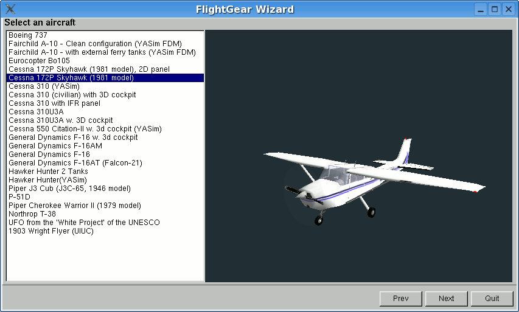
Most airplane airports should fit but
in this tutorial I assume you are using FlightGear's traditional
airport of San Francisco
(KSFO):
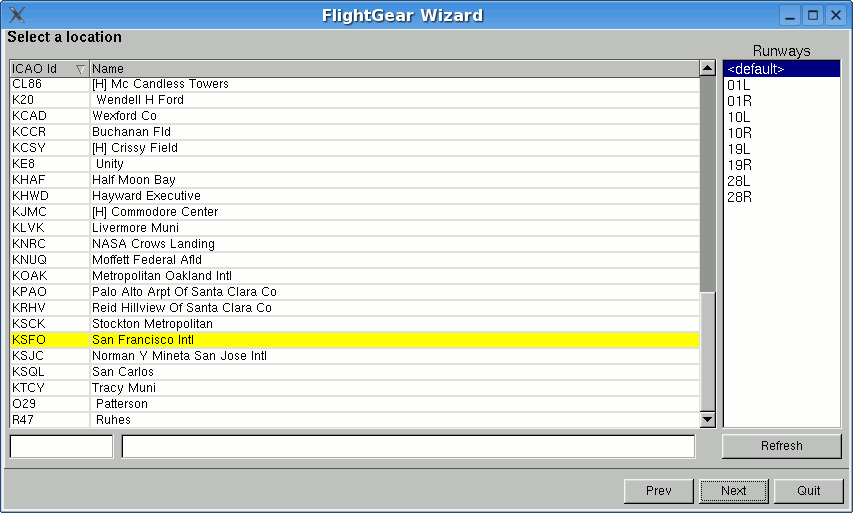
In the final dialog maybe best cancel
all display options. Ask for a flight at noon (your choice, but best a
moment with the Sun still up). (The first time you use FlightGear, pick
"noon" in the drop list, even if it is already selected.) Best start
with a little display window
of 800x600. Later on you can try to add options and ask for a wider
window. Press the Run button
and the flight simulator window should start:
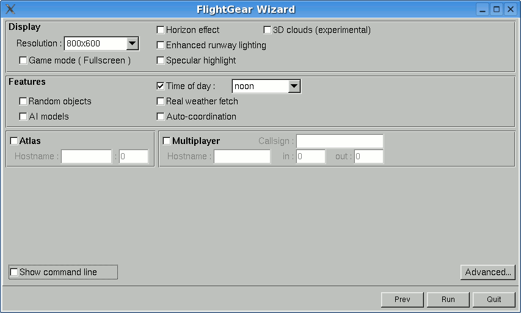
(If you get problems when you run
version 0.9.9
of FlightGear on your Windows system, try installing version 0.9.8. It
is available inside the FTP mirrors mentioned at the top of the
FlightGear
download page.)
(If you get problems under Windows Me;
the flight simulator suddenly
stuttering, too few images per second... try killing all tasks except
Explorer and Systray before you launch FlightGear. (If one of the tasks
you kill is an antivirus or such protection software, this is a
security risk.) Also, on one Windows
Me machine, a FlightGear window of 800x600 yielded good results, while
a lower resolution of 640x480 triggered awful FPS drops and stutters (Frames Per Second).)
- On Linux
and some other Unix-like systems, it
can be FlightGear is installed but
you see it nowhere in the menus. Then do one of these:
- If you have for example the latest FlightGear version 0.9.9
installed on a SlackWare
Linux system,
open a terminal window (also
named "console" window) and type the fgrun
command (and hit the Enter
key). You will get the same cute dialog windows as under Windows
(actually I got the snapshots displayed above by using that Slackware
version). If you
have another version or you get problems configuring the dialog, use
next procedure:
- To start FlightGear
open a
terminal window and type the fgfs --timeofday=noon
command (and type the Enter
key).
If the FlightGear window you get is too small, close it and maybe
restart FlightGear with this command: fgfs --timeofday=noon --geometry=1024x768
If you don't use the --timeofday=noon
option, it often happens that FlightGear
starts in a night
environment. To get a daytime environment, use the Weather
menu. Choose
Time of day.
In the dialog box ask
for say Noon.
Then click Dismiss:
(If FlightGear is available in your KDE
or
Gnome menu, you can edit the FlightGear launch icon properties and
change the simple fgfs
command to something
like fgfs --geometry=1024x768 --timeofday=noon
or whatever command options you require. You can use
any other resolution you want instead of 1024x768. (I try to keep a
4x3 ratio.))
The basic catastrophe: flying
straight
Once FlightGear is started you see this window content and you hear the
sound
of an engine:
The airplane engine is on, at low power. The airplane
trembles a little, yet it doesn't move.
About the keyboard:
- In this tutorial and in the
FlightGear documentation, a
lowercase
key letter means you simply hit that key. An uppercase means you shift
that
key. (The Shift
keys are those two keys with a hollow fat arrow pointing upwards.) In
other words:
if you are told to type v,
simply hit the v
key briefly. If you are told to type V,
push a Shift key down and
keep it pushed down, hit the v
key, then release the Shift
key. (In short: V
is the same as Shift-v.)
- I assume you let the Num Lock
on. That
is a little green lamp at the right of
your keyboard. Type the Num
Lock
key till the lamp is on. Hence I assume you will use the Home, End, Page Up and Page Down
keys located above the
four cursor keys. You can switch Num
Lock to off and use the keypad for Home, End, Page Up and Page Down. Your choice. But this
tutorial supposes Num Lock is
on.
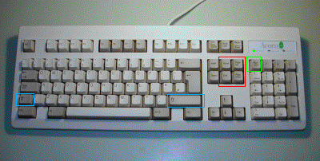
Type key v
to see the
aircraft from the outside. Type v
several
times, till you get back inside the aircraft. (Typing V
makes you cycle backwards through the views.):
!
Each time before you step inside
a real
airplane, you have
to inspect the airplane all around to check every part of it. You make
sure nothing
is hampering the moving parts, nothing obstructing the instrument
openings...
Hold the Page Up
key
down for eight or so lengthy seconds. You hear the
engine sound rise.
The airplane starts moving. It drifts to the left,
accelerates, rises in the air, banks to the left, falls to the ground,
hits it, rises again and crashes.
Maybe you wish to see a replay of this crash: use the View
menu, choose Instant
Replay,
then click the Replay
button
at the
bottom of the dialog window. (Use v
and V to
see the airplane from
the
outside.) The picture below shows the end part of the flight. (Type key
F3 to make a
snapshot. Key F10
to remove the menu bar.)
Close the FlightGear window and start a new FlightGear window.
In order to fly straight you need the airplane's control yoke:
Move the yoke by moving the mouse. For this you need to
be in mouse yoke mode.
Get in that mode by clicking
the right mouse
button. The mouse cursor becomes a +
sign. Move the mouse and see the yoke moving accordingly. Type v
to see the plane from the outside. Again move the mouse and see the
tail elevator
moving and the ailerons
at both wings ends. (Type x
a
few times to see the airplane
from a closer point of view and better see the ailerons moving up and
down. Type X
to zoom back out.
Ctrl-x
for default zoom. Type V
to get back inside
the plane.)
!
Each time you start
flying a real
airplane, you have to
visually check that moving the control yoke makes the ailerons and
elevator move.
One more click on the right
mouse button gets you in mouse
view mode.
The
mouse cursor becomes a <-|->
sign. This allows you to move your
virtual head all around. Click the left mouse button to center the view
back
in. A
third right-click will bring you again in standard mouse pointer mode.
The
right mouse button cycles the mouse through three modes:
- Normal mode.
This mode allows to click on the menu
and on the instrument panel.
- Yoke mode. The
mouse controls the yoke (+
pointer shape). (The pointer can
no
longer leave the FlightGear window.)
- View mode. The
mouse controls the direction you look towards (<-|-> pointer shape).
Restart the flight simulator, right-click to put the mouse in control
yoke mode (+ pointer shape)
and put the engine throttle on
maximum by holding Page
Up
down. Do not
try to keep the airplane rolling straight on the runway using the
mouse/yoke. Let it drift leftwards. Wait till it rises in the air.
Then use
the mouse to try and get the airplane to fly straight. (If you want to
control the airplane on the ground see chapter Turning
on the ground.)
You have to prevent the airplane from banking to the left:
Prevent it from banking to the right:
Prevent it from plunging to the ground:
Prevent it from raising its nose in the air (and the stall warning siren
from yelling):
Try to fly more or less straight, with the horizon stable above the
airplane nose:
Whatever your skills at video games or maybe even air combat
simulators, you
won't succeed. The airplane will crash, probably even faster than when
you didn't try to control it. This is the moment where most candidates
get
desperate and abandon trying to fly a simulator or a real aircraft.
Just hold tight. Keep trying.
Five minutes every day. And read the
technical explanations below:
Most awful is this error: when the airplane plunges to the ground, you
move
the mouse forwards (push the yoke). Because you want to move the
airplane's nose upwards.
Actually you have to do the opposite: move the mouse backwards (pull
the yoke).
Reciprocally, when you want the airplane's nose
to dive, you must move the mouse forwards. This can seem odd, but
all airplane control yokes are designed that way. You have to
get used to it. (Little mouse moves have strong effects on the
airplane. Maybe decrease the mouse speed for your first virtual flight
attempts.)
A visualization may help: imagine a soccer ball is on your
desk and you "glue" your hand on top of it. If you move your hand
forwards the ball will roll and your hand will plunge to the desk.
If you move your hand backwards the ball will roll back and
your hand will now be directed to the ceiling. Your hand is the
airplane:
A second error is when you assume the control yoke bank imposes the
airplane bank. In other words, you believe if the control yoke is
level, the airplane
will fly level. This is false. Actually the yoke bank imposes
the speed
at which the airplane banks. If the airplane is banked 20°
to the left and the control yoke is level, the airplane will stay
banked at 20° left forever (roughly speaking). If you want the airplane
to bank back to level, you have to turn the control yoke
slightly to
the right (move the mouse slightly rightwards) and keep it slightly to
the right for a while. The airplane will turn
slowly rightwards. Once it is level with the horizon, put the control
yoke level too.
Then the airplane will keep level (for a short while).
A third error is: you try to find "the right position" for the
yoke/mouse.
You try to find the fine tuning that will leave the airplane fly
straight. Actually there exists no such ideal yoke position. The
airplane is unstable. You constantly have to move the mouse a
little bit to correct the airplane's attitude and keep it
flying straight. This may seem a stressing
nightmare but you will become used to it. Just like with driving a car.
After a few months you will even no longer notice you are guiding the
airplane to fly straight. (You can use the autopilot to keep the
airplane level during long flights.)
An important hint: don't keep your eyes on the airplane instrument
panel or on the control yoke drawing. Keep your eyes on the
outside scenery
and especially the horizon. Check the angle of the horizon and its
height above the airplane's white nose. The horizon line and the white
airplane engine cover are your main flight
instruments. Look at the instrument panel
only once in a while.
(While the mouse is in yoke control mode (+ pointer shape), don't move it
close to the
FlightGear window edges. It's useless and awful things can happen. If
you
want to get the mouse outside of the window, first go back to standard
mouse mode by clicking two times on the right mouse button.)
You can also control the yoke using the four keyboard arrow keys or the keypad 8, 2,
4 and 6 keys.
You may hear beeping sounds while flying around the airport. Those are
landing aid signals. Don't pay attention to them, they don't warn for a
danger.
You master the thing if, while you are flying straight, the airplane
very steadily climbs in the air. Next step is to keep the airplane at
more or less constant altitude
or make it descend slowly then rise
again slowly.
The altimeter
instrument is at the middle top of the instrument
panel. The long needle shows hundreds of feet, the short
needle
shows thousands of feet. Hence the altimeter below shows an altitude
of 300 feet. That makes roughly 100 meters.
(Beware: an altimeter does not show the absolute altitude above sea
level like you would wish. Rather it shows the relative altitude above
a fictitious altitude you tuned in. See the little black knob on the
lower
left
side of the altimeter. Start FlightGear and stay on the ground. Click
(in standard mouse mode)
inside the black knob. A click on
the left half makes the altimeter turn back. On the right half the
altimeter turns higher. Use that little knob to tune in whatever
you
need. The principle is you use the knob when you are sure about the
altitude. If you know you are at 1100 feet altitude, tune in 1100 feet
on the altimeter... (Clicking with the middle mouse button makes the
knob turn
faster. Type Ctrl-c to see the two
button halves
highlighted.))
Basic turning
Once you are able to fly straight, even just approximately, you can
begin to learn to turn. The principle is simple:
- When the airplane is banked
to the left, it
turns to the left.
- When the airplane is banked
to the right, it
turns to the right.
Don't overbank. 20° is a good
bank to get a steady and
reliable
turn. This it what the turn coordinator
is used for. On the picture
below
the
indicator shows the airplane is banked 20° to the right. This
is
just fine to turn to the right:
Try this out: keep the airplane banked around those 20° for a
few
minutes and look at the outside. You will see the same ground features
appear again and again, every 120 seconds. This shows you need
120 seconds
to make a 360° turn (or 60 seconds for a 180° turn).
(This is utterly
important when navigating: whatever speed the airplane is flying, if
you bank at 20° you always need 60 seconds to make a
180° turn. Whatever the speed or altitude. The
bank indicator and the clock are essential navigation instruments.)
(Note there seems to be a small error on FlightGear: a 180° takes only
50
seconds instead of 60.)
So, by banking the airplane to the left or to the right, you make it
turn to the left or to the right. Keeping the airplane level with the
horizon keeps it flying straight.
(The little purple ball in the bottom of the turn indicator shows the
sideways forces. If you turn neatly (using the rudder a little bit (see
below)),
the ball will remain centered. If the ball is pushed say rightwards,
this means you the pilot too are pushed rightwards. Like in a car
turning to the left. During a neat turn in an airplane, even a strong
turn, the passengers never endure a sideways force. They are only
pushed a little harder on their seats.)
By experimenting you will notice you easily get fast and spectacular
turns by
banking the airplane to strong angles and pulling on the yoke. It
would be mad to do this with
a real airplane if you are a beginner or if you have passengers aboard.
Anyway one of the trainings to become a pilot is to make the airplane
bank up to 60°.
Each time you start the flight simulator, you have to
decide whether you are going to learn flying or just get fun doing mad
things.
There
is nothing bad with the fun. The more fun you make, the better
understanding of the aircraft you get. That's one use of a flight
simulator and it's good for your security. But you also have to
train calm and realistic flying. Either you make a mad flight
or you make a serious flight to mimic a real flight. Don't mix
these two modes.
Turning on the ground
The picture below shows the tachometer
instrument. It displays how many hundreds of
Rotations
Per
Minute
the engine is doing:
Start the flight simulator. Type the Page
Up key a few
times, till you get
the engine rotation speed to 1,000 RPM (like displayed above).
(Typing the Page Down
key
decreases the engine speed.)
At roughly 1,000 RPM,
the airplane will roll on the runway, but it will not accelerate nor
take off.
Type the "."
key (Shift-; on Azerty
keyboards). The airplane
will make a sudden little turn to the right. If you keep the "." key down the airplane will halt.
When you type the "."
key, you
activate the brake on
the right wheel of the airplane. That makes
the airplane turn right and halt.
To activate the brake on the left wheel, use the "," key.
The "," and "." keys simulate two
brake pedals
located at your feet on a real airplane. This way you can control both
the speed and turn of the airplane on the ground. (Some airplane, like
the Hunter, can turn on the ground only by using this method.)
(For the hackers amongst you who own an Azerty keyboard and want to
tune in something more practical than ","
and "Shift-;" for the differential brakes:
being
root, edit file keyboard.xml
(it is located at
/usr/share/games/FlightGear/data/keyboard.xml
on my computer). Around
line number 300 you should find two lines <key n="44">
and
<name>,</name>
and a little below two other lines <key n="46">
and <name>.</name>.
They are explicitly
followed by lines mentioning them as "Left brake" and "Right brake".
Change the first two lines to <key n="59">
and
<name>;</name>
and the two further below to <key n="58">
and <name>:</name>
to get ";" and ":" for the
differential brakes. (59 is the ASCII code of symbol ";" and 58 is the
ASCII code of symbol ":".))
The brakes can be very useful when taxiing slowly on the runway.
Another (complementary) method exists: you can use the airplane front
wheel. In a real airplane this is
done by pushing the rudder
pedals with your feet. You push with your
feet on the side you want to turn towards. In FlightGear two ways exist
to control the rudder pedals:
- Using
the keypad 0 and Enter
keys. If you type
the keypad Enter
key say seven times, you will
see the airplane firmly turns to the right and stays turning. Type the
keypad 0 key seven times
to get the airplane back rolling (almost) straight.
- Using the mouse.
While the mouse is in yoke control mode (+ pointer shape), if you hold the
left mouse
button down, the mouse controls the rudder instead of the yoke. This
feature is absolutely marvelous. Take some time to
train it.
Start the simulator, Type v or
V to view the airplane from the
outside and keep x down a
couple of seconds to zoom on the airplane. Look at the front wheel and
keep keypad 0 down. Then keep
keypad Enter down. See the
front wheel turn. Click on the right mouse button to get in yoke
control mode (+ pointer shape).
Keep the left mouse button down to get in rudder control mode and move
the mouse to the left and to the right. Note that the rudder, that big
vertical control surface at the rear of the plane, moves together with
the front wheel.
I tend to control the rudder pedals using the mouse when the front
wheel is on the ground and using the keypad 0 and Enter keys when the front wheel no
more touches the ground. In other words: I keep the left mouse button
down when the front
wheel touches the ground. This allows for a precise and easy rudder
control on the ground. I release the left mouse button when the
front wheel no more touches the ground. Then I use the keypad keys 0 and Enter to control the rudder.
A drawback of FlightGear is that you don't see the position of the
rudder
pedals. To see it, two methods are available:
- Ask for the "panel", by
typing the P
key (Shift-p). Type P again to remove
the panel. The
little white cursor at the bottom of the I-shaped indicator shows the
position of
the rudder pedals. (That I-shaped indicator is just below the red BRAKE
light.) (Note the panel won't appear if the view is not
centered.) (You can also choose a plane with a 2D panel when you start
the simulator.)
- Ask for the Head-Up Display,
by typing the h
key. The picture below shows the HUD rudder
indicator. The green arrow is slightly to the right of the green center
line. This means the right rudder pedal is slightly pushed in.
(Type h
several times to toggle
between two HUD colors and no HUD. Type H to change the HUD
color intensity.
Type I to
get a simpler HUD
(my favorite) (i to get back
standard HUD). The sequence of keys I use to get my favorite HUD is h H I. The picture below shows this
HUD. The uppermost and large scaled green indicator is the compass.
Just below
it is the horizontal yoke/mouse/ailerons position. The arrow shows the
yoke/ailerons is centered. At the full right of the picture is the
engine
throttle lever position indicator. The arrow at its bottom shows the
throttle is
tuned to minimum. At the full left are the trim and vertical
yoke/mouse/elevator position indicators (the trim is on the left side,
the yoke is on
the right side). The short green texts at the top of the picture, left
and
right
from the HUD compass, are the plane GPS position. They are almost
unreadable on a standard 800x600 window like below. (Either tune in a
black HUD (H) or use a
larger window. 1200x900 is fine.) The green HUD texts at the bottom of
the
window, left and right, contain valuable data. (I don't use them in
flight. I rather use them during flight replays.))
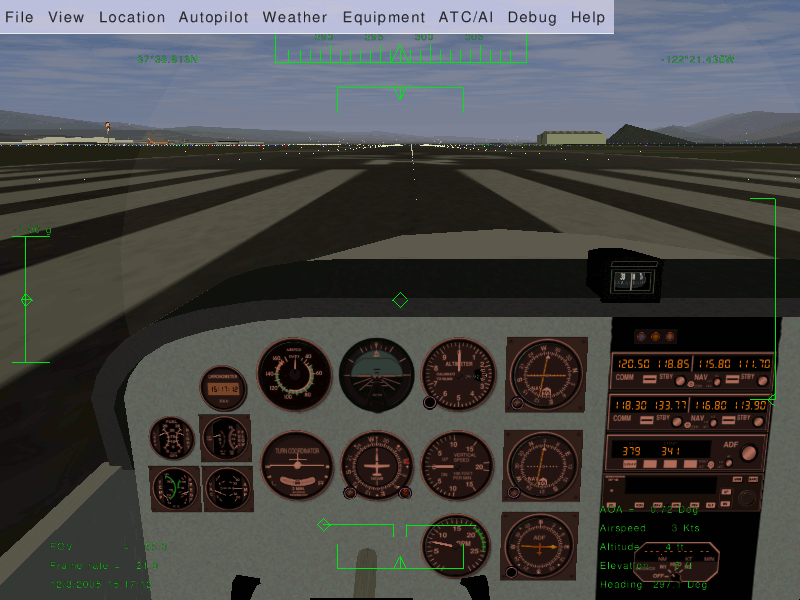
This is the airspeed
indicator, expressed in knots:
A knot is 1.85325 kilometer/hour. So, if you want to have a rough idea
of your speed in flight expressed in km/h, multiply the knots displayed
by 2. A knot is 1.15115 miles per hour, so very roughly,
1 knot is 1 mph. (Be careful with these roughnesses. Multiplying by 2
instead of 1.85325 makes a difference of 8%. Now, for example: landing
at 65 knots instead of 70 knots makes the landing quite different,
even when this is only a difference of 8%... And landing at 80 knots,
which is only 14% more than 70 knots, can get you into real trouble.)
(Note some aircrafts' airspeed indicators display mph instead of knots.)
Note the airspeed indicator displays the speed of the aircraft compared
to
the surrounding air, not the speed compared to the ground like a car
speed indicator does. If the plane is halted on the ground and there is
a 10 knot wind blowing towards its face, the airspeed indicator will
display 10 knots airspeed, although the plane doesn't move...
When the airplane rolls over the runway at more than 40 knots, you must
prevent the front wheel from touching the ground. During take off, once
over 40 knots you make the front wheel leave the
ground by pulling a little bit on the
control yoke (on the mouse).
The picture below shows the front wheel slightly lifted. Don't overdo
this.
Keep the airplane's white nose cover well below the horizon. You just
need to lift the
plane's nose a little.
The reason why you must raise the
front wheel is it is not designed to roll at high speeds. It would
shimmy.
Question: if the front wheel no longer touches the runway, how do
you
steer the airplane? Answer: still using the rudder pedals. Indeed the
rudder pedals are linked to the tail rudder, that big
vertical moving part at the tail of the plane:
At air speeds above 40 knots, the rudder is adequate to steer the
airplane.
The rudder pedals command both the front wheel and the rudder at the
airplane's tail. So,
just move the rudder pedals...
Note the front wheel and the tail
rudder don't make the airplane turn
exactly the same way. So when the
rudder takes over the front wheel, you must adapt the rudder pedals
angle. That means fast typing keypad 0
and keypad Enter (or hold the
left
mouse button down and tightly control the rudder with the mouse).
Once you trained all this, you are able to keep the airplane straight
on the runway when
taking off.
An advice: say the
airplane is heading too much to the right. You type keypad 0 a few times to make it turn back
to the left. Well don't wait till the trajectory
is corrected. Type keypad Enter
a short while before the airplane reaches the direction you
wish. Otherwise it will go turning too much to the left. (If you use
the mouse, things are much easier and precise.)
So, two methods exist to steer the airplane on the ground: the
differential brakes
on
the side wheels and the rudder pedals. This is essential to aviation:
at least two ways to perform each important function. This is
called redundancy.
If
one method fails, you use the other method, even
if that second method is not optimal. Sometimes three or even more
ways exist to perform a given task.
Don't overdo turning on the ground, especially at high speed. That
would make the
plane fall sideways and be damaged. Make use of the simulator to try
this out (fun mode).
(Why does the airplane drift to the left when it rolls on the ground,
making you have to compensate with a little push on the right
rudder pedal (about two keypad Enter
hits)? Main reason is the flow of air produced by the propeller. It
blows along the airplane body, but also it turns around the airplane body. The
upper part of that slight vortex pushes the vertical
tail to the right. That makes the front head to the left.)
You can center all yoke and rudder controls by typing 5 on the keypad. This is a good
preflight precaution. Sometimes it can "save your life" in flight.
(Note the trim is not centered by keypad key 5 (see below).)
A little problem in flight is the mouse drifting away from the center
of
the screen. After a while, you get the yoke centered by placing the
mouse quite far from the center of the screen. Two solutions exist:
- The solution I use is to
click the right mouse button three times. Cycling through the three
mouse modes centers the mouse in yoke mode. Actually the click sequence
I use is slightly more complicated: right-click, lift the mouse,
left-click, right-click, mouse back down, right-click. This is hectic
but it ensures the view keeps centered too. (Note I almost never center
the mouse. I don't look at the mouse to know if the yoke is centered.
Rather I look at the horizon. That's the way I check the plane is
flying OK.)
- Quickly put the mouse in the center of the window, type keypad 5 and get the plane back to stable
flight.
Before you type F3 to make a
snapshot, better put the mouse in standard mouse pointer mode. Only
then type F3, then Enter to close the little report
window. Then click the right mouse button to get back to mouse yoke
control (+ shaped pointer).
So, two methods exist to turn in
the air?
Indeed. You can use the wing ailerons (steered by
the yoke/mouse)
or you can use the tail rudder (steered by the rudder pedals
/ the keypad keys 0
and Enter).
Why these two ways? Because we need redundancy, of course, but
especially because they are very complementary:
- When flying close above the
ground, you better don't bank the
airplane in order to turn. Use the rudder instead. Acting on the
rudder pedals allows to make the airplane turn without banking. (If you
are close to the ground, this implies you fly at low speed.)
- Reciprocally, when the plane is close above the runway, the two
side wheels
need to be at the same height above the runway. That means the wings
must be level with the horizon. The plane is not allowed to bank. You
keep the plane wings level with the horizon by using the
yoke/mouse/ailerons. Note this does not need to be perfect. A bank of a
few degrees seems harmless.
- In flight, especially at high speed, the rudder is a
dirty way to make the airplane
turn:
- It makes the airplane present its flank to the airstream, hence
the airplane is
braked.
- The airplane will turn very
slowly.
- You don't
get a very good control on the turn.
- At high flight speed the
centrifugal force will
be disturbing or even dangerous.
Using the yoke/mouse/ailerons allows for efficient, fast,
reliable and comfortable turns.
- When you turn in flight, using
the
ailerons, you still
need the rudder a little bit. You add a little bit of rudder (that is
the rudder pedals / the keypad 0
and Enter) to the movement.
This
allows you to perfectly compensate
the centrifugal force. You check this visually on the turn coordinator.
On
the picture below the little ball is pushed rightwards during a strong
turn to the right using the ailerons. That means you the pilot
endure a rightwards force too. Compensate this by pushing the right
rudder pedal (type the keypad Enter
key a few times). In
normal flight you use the rudder to keep the little ball centered.
(I don't care for this when flying the simulator. Gentle turns on the
Cessna 172p seem to keep the ball centered without using the rudder.)
- The rudder can be vital when the
wings are stalled.
Indeed, during a
stall the wing ailerons become less effective or even useless. (Note
some airplanes can go in a very dangerous stall if you overdo the
rudder control at low speed.)
So, you tend to turn by using the ailerons in normal
flight and by using the rudder when
close above the ground at low speed. Yet one method never completely
cancels
out the other. You still need the rudder at high altitudes and speeds.
Reciprocally you have to use the ailerons a little bit
when close to
the ground, to keep the wings level with the horizon. (Actually you
must use the ailerons even when taxiing
slowly on the ground, when there are strong side winds, to prevent the
airplane being tilted and blown aside.)
Best never make quick and strong movements with the rudder. On the
ground at high speed this can make the airplane tumble aside. In flight
at low speed it can cause a very dangerous stall. In flight at high
speed it can cause all kinds of aerodynamic and physical discomfort.
Try to make slow movements with the rudder. Make slow tunings at a time
and take your time to stabilize their consequences. (Only the ailerons
allow for nervous movements.)
I recommend you train to turn with the rudder in flight. Fly at a low
speed of about 70 knots. Try to keep the altitude stable by increasing
and decreasing the engine power. Maybe best a quite low altitude. Use
the rudder to get to a target, to maintain a heading, to make turns to
a new target... See how the plane yaws. Learn to anticipate rudder
control. Don't try to make steep turns. Use the yoke/ailerons
to keep the wings level
constantly.
Engine control
An airplane engine is a technological wonder. It is the most powerful,
efficient, lightweight and reliable fuel energy plant commonly
available.
On the bottom left, below the instrument panel you find the magneto
switch / engine starter:
To see the switch, either type P
to get the schematic instrument panel or type Shift-x to zoom out (x or Ctrl-x
to zoom back in).
Move that switch with the {
and } keys
(use the Alt Gr
key on Azerty keyboards).
You probably know the fuel inside a car engine is ignited by electric
sparks. A car engine contains an electric magneto to create the
electricity for the sparks. An airplane engine contains two
such magnetos:
the "left" one and the "right" one (redundancy...).
When you put the magneto switch on OFF, both magnetos are switched off.
Hence the engine can't run. (Putting the magneto switch on OFF is a way
to
shut the engine down. Yet you shouldn't use it because it causes
residues to deposit inside the cylinders.) When you put the magneto
switch on L you are using the left
magneto. On R you are using the right magneto. On BOTH you use both. In
flight you have to be on BOTH.
Why do you have the possibility to use the left and right magnetos
alone?
This can seem useless, since you fly using both. The reason is each
time you start the engine in order to fly, you have to
verify each magneto separately. So you put the magneto switch on
L, then on R, slowly. That way you check each of them. If everything is
OK, then you put the magneto switch on BOTH. Should one of the two
magnetos fail in flight, the other one will keep doing the job. The
failure of one magneto is rare, the failure of both together is
almost impossible. If during the pre-flight check it appears one of the
magnetos fails, you have to cancel the flight.
You surely already started the simulator and typed { to shut the engine
down. So now you
want to start it back on. Type }
three times in order to put the magneto switch on BOTH. To start the
engine press the Space
Bar.
Keep it pressed a few seconds, till the engine is started.
You can also turn the magneto switch and start the engine by clicking
left and right of the switch (normal mouse mode). Type Ctrl-c
to see the two click sides highlighted by yellow rectangles.
If you turn the switch to OFF, the engine noise stops. If you quickly
turn the switch back to L, the engine starts again, though you didn't
turn the switch to START. The reason is the propeller was still
rotating. You should have waited till the propeller came to a
halt. Then,
placing the switch on L, R or BOTH won't start the engine. (Once the
engine is halted, always place the magneto switch to OFF.)
Now about the throttle:
You already know you increase the engine power by pushing that throttle
lever
in
(Page Up key).
You decrease the power by pulling the lever out (Page Down key). You
can also click left and right of the lever (middle mouse
button for quicker moves, Ctrl-c to highlight the
left and right
halves).
What means "increase the power"? Does it mean you increase the amount
of fuel delivered to the engine? Yes, but this is not enough to fully
understand what you are doing. You need to be aware that the engine is
also fed with a huge amount of air. The engine's cylinders burn an
intimate
mixture of
fuel and air. Fuel alone wouldn't burn. Only a mixture of fuel and air
can detonate and move the engine pistons. So when you push the
throttle in, you increase both the fuel and the air fed to the
engine.
The amount of air compared to the amount of fuel matters a lot. The
proportion of the two has to be tuned closely. This is the purpose
of the mixture lever. The picture below displays the mixture lever, far
too much pulled out:
When the mixture lever is fully pushed in, you feed the engine with an
excess
of fuel. When the lever is pulled out completely, there is an excess of
air. The correct position is inbetween. Usually quite close to fully
pushed in.
When you start the engine and when you take off, you need a fuel-rich
mixture. That means the mixture lever pushed in. A fuel-rich mixture
allows the engine to start easily. It also makes the engine a
little
more reliable. The
drawback is that a part of the fuel is not burned inside the engine. It
is
simply spilled away. This makes the engine more polluting, it decreases
the energy the engine can deliver and it slowly degrades the engine by
causing deposits of residues inside the cylinders.
Once in stable flight, you have to pull the mixture lever a little, to
get the optimal mixture. Check this out by doing the following. Start
the simulator. Put the parking brakes on with key B (that is Shift-b). Push the
throttle in to its
maximum. The engine RPM are now close to the maximum. Slowly pull on
the mixture lever (using the mouse in normal pointer mode). You will
see the RPM increases a
little. You get
more power, without increasing the fuel intake. You spill no more fuel
in the engine and it pollutes less. If you continue to pull the mixture
lever, the RPM will decrease back away, because now there is too much
air. The excess of air slows the explosions down inside the cylinders
and
decreases the explosion temperature, hence the thermodynamic yield
decreases. You
have to tune in the optimal mixture. You can check you get the
optimal tuning by the fact you get the highest RPM. (Another
method is to check the engine exhaust temperature. Roughly, you need to
get the highest temperature.)
Question: why a mixture lever? A car contains no mixture lever and
drives fine. There are two answers. First is a car is not an optimal
device. An airplane is, hence it needs fine tunings. Second
and more fundamental answer is a car operates at constant altitude. So
the mixture tuning can be tuned in once and forever by a garagist. A
plane rises in the air. The higher the altitude, the less dense the air
is. Hence the openings or pumps that let the air into the engine have
to
get wider or pump stronger in order to inject the same weight of air
into the cylinders. So when you gain altitude, you have to pull a
little on the mixture lever to keep an optimal fuel/air mixture. When
you descend back to the ground, you have to push the lever back in.
(Actually, if you live at sea level and you move to a new location high
in a mountain country, and you take your car with you, you should ask a
mechanic to adapt the mixture tuning of your car. Should you drive your
car back to sea level, it will drive fine but it will be less powerful
and more polluting... I suppose modern cars contain some electronics to
control this.)
You have to take the mixture lever seriously. It allows you to burn
less
fuel for the same speed and distance, hence to fly farther away and
pollute
less. It can also cause serious trouble. Suppose you go flying at high
altitude and pull on the mixture lever accordingly. Then you descend
back in order to land. But you forget to push the mixture lever back
in. The fuel/air mixture will become far too rich in air and the engine
will simply halt. You may think the engine is failing and panic, while
you only have to push the mixture lever back in...
When landing, you have to tune back in a mixture that is a little too
rich in fuel. This means pushing the mixture lever in. That way the
engine becomes a little more reliable and will be better adapted to a
decrease in altitude.
I wrote above that placing the magneto on OFF is not the right way to
stop the engine. The right method is to pull the mixture level. First
pull the throttle out completely, to get the engine to minimum power
and fuel consumption. Then pull the mixture lever, till the engine
stops
because the mixture contains too much air. This ensures the engine
doesn't get poised by spilled fuel residues. Finally, turn the magneto
switch to OFF to ensure the engine won't start back accidentally (for
example because strong wind makes the propeller turn).
An important warning: you may think the RPM indicator reflects the
engine power. Wrong. Two things make the RPM increase: the engine power
and
the
airplane speed. To
check this, fly to a given altitude then pull the engine power to
minimum. Try out diving to the ground then rising back to altitude. You
will see the RPM varies strongly. It rises while diving and decreases
while rising, together with the plane speed. Though you didn't tune the
engine power. One pitfall of this is when you intend to tune the engine
power in for landing. Suppose you're flying fast. You know the
ideal RPM for landing is around 1,900 RPM. So you pull the throttle
till you get 1,900 RPM. You think you tuned in the appropriate RPM. You
think you shouldn't bother any more about it. But now the plane's speed
decreases. Hence the RPM decreases. A few minutes later, you get the
low flight speed you wanted. You don't see the RPM is now at 1,000. Far
too slow. You will either lose altitude or stall. Or both. So, be
cautious with the throttle and with the RPM indicator. Either pull
on the throttle more steadily or be mentally prepared to push it back
in quickly.
Wings and speed
Fly with full engine power. Diving the nose a little makes you lose
altitude and
raising the nose a little makes you gain altitude. You may think this
is
quite logical. The plane travels in the direction it is heading; the
direction the propeller is heading. Yet this is not the appropriate way
to think about it. It would be fine for a rocket, but not for an
airplane. A rocket is lifted by its engine, while a plane is lifted by its
wings. That's a huge
difference.
Get a big rigid square of cardboard, hold it horizontally in your hand
with your arm stretched out and make it do fast horizontal movements
while rotating your torso. When the cardboard moves flat through the
air, it experiences no lift force. If you twist your arm slightly to
give the cardboard a slight upward angle, you will feel it tends to
lift in the air. There is an upward force acting on the cardboard.
That's the way a wing holds a plane in the air. The wings have a slight
upward angle and lift the airplane. The more angle you give
the
cardboard, the more lift force. Till you give it too steep an angle.
Then you will rather feel a brake force (the cardboard is "stalling"
(see below)).
- When you pull the yoke, the
airplane's nose rises up. Hence
the wings travel through the air at a steeper angle. Hence the lift
force on the wings is stronger. Hence the plane rises in the air.
- When you push the yoke, the
airplane's nose dives. Hence the
wings travel through the air with less angle. Hence the lift force on
the wings decreases. Hence the plane descends.
What matters is the angle the wings travel through the air. That's the angle of
attack.
I wrote above that when the wings travel
through the air with no angle,
they don't lift. This is false. It would be true if the wings were a
flat plate like the cardboard. But they aren't. The wings are a
slightly
curved airfoil.
That makes them create a lift even when traveling
through the
air at no angle. Actually, even with a little negative angle of attack
they
still
create a lift force. At high speed the airplane flies with the wings
slightly angled towards the ground! This is not very important...
The angle at which the wings travel through the air matters. Something
else
matters too: the speed. Take the cardboard again in your
hand. Hold it with a given slight angle and don't change that angle.
Check that the faster you move the cardboard, the more upward lift
force it experiences.
- When you increase the engine
power, the plane increases
speed, the lift force on the wings increases and the plane gains
altitude.
- When you decrease the engine
power, the plane decreases
speed, the lift force on the wings decreases and the plane loses
altitude.
To make things a little more complicated:
when rising in the air,
the airplane tends to lose speed. When descending, it tends to gain
speed.
That's all a matter of compromises. If you want to fly at a constant
altitude and at a given speed, you will have to tune both the engine
power and the yoke/elevator (or better: the trim (see below)), till you
get what you want. If you want to
descend
yet keep the same speed, you have to push the yoke a little and
decrease the engine power. And so on. You constantly have to act both
on
the engine power and on the yoke. (During a normal flight one doesn't
make things that complicated. Simply tune in a comfortable engine power
level then forget about it and rely on the yoke and trim for the
altitude.)
A very interesting exercise you can perform with the simulator is to
fly straight with full engine power. Get maximum speed while keeping in
horizontal flight. Then
you decrease the engine power to
minimum. And you pull steadily on the yoke to keep the plane at
constant altitude. The plane slows down steadily, meanwhile you
pull more and more on the yoke. Since the speed decreases the lift of
the wings would decrease, but you compensate the loss of speed by
increasing the wing angle of attack. (This
proves the plane does not necessarily travel in the direction its nose
is
heading. In this experiment we make the nose rise in order to stay at
constant altitude.) Once the plane is severely slowed down, and the
nose is strongly heading upwards, you may hear a siren yell. That's
the stall warning (see below). The angle of attack of the wings is too
strong. The wings are
now braking the airplane instead of lifting it. The plane quickly loses
altitude. Whatever you pull on the yoke, you're falling.
The only thing you can do is push the yoke forwards, make the nose
dive,
gain speed and glide towards the ground. Possibly push the engine
throttle back in
to full power.
Question: is it better to control the airplane's speed and altitude
with
the yoke or with the throttle? Answer: it depends on what
exactly you intend to do and on the situation you are in. In normal
flight, as said above, you tend to set a comfortable engine power
level, forget about it and rely on the yoke and trim. During take off
and landing the procedures are quite strict about the use of
yoke and throttle. You do the opposite: control the speed with the yoke
and trim, control the altitude and descent speed with the engine
throttle. That will be discussed in chapters below.
The flaps
The flaps
are situated at the rear of the wings, aside the plane's body:
Deploy the flaps and pull them back in by using the flaps control lever:
You can either click on it with the mouse or use the [ and ] keys. Key [ to retract the
flaps one step, ]
to deploy them one step. Type v
to view the plane from the outside and try out [ and ]. (On the schematic
instrument panel the flaps lever is located at the lower right.)
There are four flaps steps:
- No flaps. For normal flight.
- One flaps step. For take off,
when you want to gain
altitude
while flying slowly. Or during runway approach, while flying at
constant altitude.
- Two flaps steps. To brake the
plane, in order to lose
altitude
quickly, for example when you dive towards the runway to land.
- Three flaps steps. To lose
altitude even more quickly.
There is a security risk. Do not deploy one flaps step above 110 knots.
Do not deploy two or
three flaps steps above 85 knots.
The flaps brake the
plane at high speed. This is one more reason not to forget to pull the
flaps
back in once you fly above 85 or 110 knots.
My favorite way to know the flaps position is to type Shift-right arrow. Then quickly Shift-up arrow to get back to front view.
Another method I use is to make sure the flaps are fully retracted by
quickly typing [ several
times. Then type ] the exact
amount of times needed.
The role of one flap step is to increase
the wing lift. The wing lifts
more at a given speed. Hence you will get in the air a
little sooner during take off. It also has the effect to make the plane
fly with the nose a little more downward. This is
handy: it
allows to keep an eye on the runway while rising in the air. It allows
a better view on the runway during landing.
The role of two or three flaps steps is to brake the plane. This
is
mandatory when landing, because the airplane glides very well. If you
cut down the engine power completely, sure the plane will descend, yet
too slowly. You need to deploy two or three flaps steps in order to
brake and
really descend towards the ground.
The fact that the flaps brake during landing makes you need more engine
power
during the landing. This can seem odd. Why not simply throttle the
engine down to minimum and use less flaps steps? The answer is it's
better
to have a strongly braking plane and lots of engine power, because then
the plane
reacts faster to your commands. Should the engine fail, then just
retract
flaps as needed...
Trying to take off with two or three flaps is a bad idea. This can
sound fun, but beware: suppose you deployed one flaps to take off. Yet
you forgot to pull the flaps back in. Later on you encounter a
emergency situation and you need to gain altitude very fast. You deploy
one flaps step. Actually you add one flaps step to the flaps step
already out. So now
you have two flaps steps. Hence the flaps are braking and you fail to
gain altitude... Whenever you feel
the plane is behaving really odd and seems unable to rise in the
air, or even keeps falling whatever your efforts and the engine power,
think maybe you deployed more than one flaps steps.
Redundancy... What can you do if the flaps don't deploy and you really
need to brake? Answer: slowly push
the rudder pedals on one side. This will make the plane present its
flank to the air stream and brake. Compensate the turning by using the
ailerons (yoke). This is not a very comfortable way to brake and you
should train it before using it close to the ground. (I tried to use
both the full flaps, the rudder to an extreme and the throttle to
minimum. You really loose altitude very quickly...)
The stall
A stall is an
emergency situation, at whatever altitude. It means the
plane is flying too slowly hence the wings travel through the air at
too strong an angle. The wings suddenly start braking the plane instead
of lifting it. It is especially dangerous when close above the ground.
It is dangerous even at high altitude because you lose part of
your control over the plane.
During a normal flight, a stall should never occur. As a
pilot you have to constantly keep the plane well above stall speed.
Once the stall siren yells, it means things already have gone very
bad.
Some little airplane like the Piper Cub are designed to
land using a near stall. Planes like the Cessna 172 are designed
to make stalls less likely to occur and less deadly when they occur.
That's for example one reason why the wing extremities are square. The
Cessna is still controllable during a stall and a simple stall and fast
descent to the ground should not kill the passengers. Yet any wind
turbulence or strong bank can make things go worse...
A stall can make some airplanes go into a
deadly spin.
Fly for example the F-16 Falcon to some altitude, throttle the
engine down to minimum and pull steadily on the yoke to keep the same
altitude while decelerating... One
problem with the legendary WWII fighter plane Spitfire was during too
tight turns the inside wing would suddenly stall completely but not the
outside wing.
What can you do during a stall? The procedure can be very different on
different planes. You should not trust this tutorial, especially not
for
such a serious matter. Anyway:
- On little planes like the Cessna or the Piper J3 Cub you keep all
controls on the airplane: elevator, rudder and both ailerons. But keep
in mind the ailerons are on the wings and those wings are stalling.
Think of using the rudder to turn. If you are very close to the ground,
simply let the plane fall on the ground and keep it on the ground. Just
try to make the best possible fall. If you are high in the air, push
the
yoke to dive the nose and gain speed. Think of retracting the flaps at
one step. If possible, immediately add as much engine power as
you can. Till you are out of danger.
- On the F-16, the ailerons loose all control during a
stall.
Actually that's the first sign of a stall: the ailerons act no more and
the plane banks loosily. You only keep control on the rudder and
elevator. If the stall just begins, dive the nose and increase engine
power. If the stall degenerated in a spin, engine power and dive won't
solve the problem. Only the rudder will help to slow the spin down.
Push it to the other extreme of the spin direction. Push the yoke to
help. Decrease engine power to minimum to get out of the spin more
easily. Once the spin is slow enough, a dive and engine power will
help. (If you put full engine power during the spin, you will loose
less
altitude I believe, but the spin's end will be difficult to control.
React
quickly to center the rudder again once the spin nearly stops,
otherwise you will immediately go spinning in the other direction.) At
low altitude you probably won't have the time to do all this. Note a
spin with the plane belly up can happen too.
Stall-elegant airplanes like the Piper J3 Cub and the Cessna 172 tend
to have roughly rectangular wings. While stall-ugly airplanes like the
F-16 Falcon and the Cessna Citation II tend to have trapezoidal wings.
The advantage of the trapezoidal wings is they have a better
aerodynamic yield. They allow to fly more distance with a same quantity
of fuel. The ends of the rectangular wings engender strong turbulences.
Those turbulences brake the plane but also they keep the air flowing
correctly once the plane stalls...
When you learn to fly a virtual plane, making it stall is a very good
exercise:
- Fly at constant altitude with no engine power, till the stall
begins. Then try to control the plane while it stalls and descends to
the ground. Keep the yoke pulled to the maximum. Keep the plane in a
steady attitude, the wings parallel with the horizon. Try to change
direction. Experiment with the flaps. Note one flaps step decreases the
stall speed. Two or more flaps steps don't change the speed much. Then
end the stall by pushing the yoke and restoring engine power.
- Raise the nose in the air and bring the plane to a halt like a
stone thrown upwards. Then try to get the plane back to normal flight.
Try to perform the exercices above with different airplanes. First time
I tried a stall with the virtual Cessna Citation II, I was at 1,000
feet altitude, which is supposed to be safe. I was not able to
stabilize the plane and it crashed. I was really frightened by that
airplane. On second attempt I managed to stabilize before the plane hit
the ground. Anyway, from now on I won't fly a Cessna 172p and a Cessna
Citation II with the same mood.
If you fly an unknown virtual airplane and wish to know the landing
speed, a rule of thumb is you find out the stall speed by
experimenting. Then you multiply that
speed by a factor of 1.2 or more. (A friend who is Aerospace Engineer
told me 1.2.) The stall speed of the Cessna 172p is 40 knots yet
its imposed landing speed is 70 knots (minimum 65 knots). That makes a
factor of 1.75... I made an experiment landing the virtual Cessna 172p
at 50 knots. It virtually falls to the ground, at close to -1000
feet/minutes vertical speed. This seems very hard for the landing gear.
While approaching at 50 knots with the Cessna 172p,
the runway and most of the ground are completely hidden. This obviously
tells a higher speed is mandatory. I would recommend following rules to
find a correct landing speed. It must be the lowest possible speed that
satisfies all these conditions:
- Be more than 1.2 times the stall speed.
- Be high enough to allow a vertical speed of no more than -500
feet/minute (all flaps
steps deployed).
- On most modern planes, the landing speed must be high enough to
allow you to see the runway while approaching at low speed and
constant altitude.
On big passenger jets the
flaps make a lot of difference. Bear that in
mind when you try to find the stall speed. Make the experiment with the
flaps deployed, as they will be deployed during the landing.
The load
of the airplane also changes the stall speed a lot, and therefore the
landing
speed. You land a fully loaded airplane at a higher speed than an
empty one.
(Once you get used to landing different airplanes, you get a feeling
for
the landing speed of an unknown airplane. You just feel the airplane
"wants" to land at that speed. I suppose this is because the airplane
was designed to land at that speed.)
! In a real
airplane the sounds and vibrations tell a lot about the state of the
airplane. When all vibrations stop, this means you are going to stall.
Then push the yoke to get speed.
The trim
The trim is that dark big vertical wheel with gray dots located at the
middle below the instrument panel:
On FlightGear, the keys Home
and
End are used
for the trim. The key Home rolls the wheel upwards while
the key
End rolls the wheel downwards.
You can also
click on the upper
or lower half of the trim wheel (Ctrl-c for a yellow highlight). Possibly
look at the plane from the outside (v
or V and x) and move the trim while looking
at the elevator.
In first approximation, the trim does the same as the yoke: it acts on
the elevator. Turning the trim wheel downwards is the same as pulling
on
the yoke. Yet there is a key difference between the trim and a real yoke. If you tune the
trim, it keeps that tuning. While if you pull or push on the yoke, it
goes back to neutral once you release it.
Once in flight, you would keep the mouse/yoke at a given forward (or
backward) position.
That position is optimal to keep the plane at a roughly steady
altitude. In a real airplane, this means you would constantly keep
pushing (or pulling) on the yoke. That would be quite uncomfortable.
This is where
the trim falls in. You tune the trim to impose a
default elevator
angle. Then you no longer have to push or pull the yoke constantly. In
other
words: make a global rough tuning with the trim and occasional fast
tunings
with the yoke/mouse.
The trim is an important control. I tend to forget it, for two
reasons.
First
is the mouse makes the trim virtually useless. This is quite unnatural
of course.
People with a force-feedback joystick/yoke will feel the need for
the trim, as well as people flying real airplanes. Second is
the trim didn't operate on the particular version of FlightGear I was
using until recently...
During take off the trim must be neutral. You have to check the trim is
centered before every take off. Also if you abort a landing and start
rising back to altitude, put the trim to neutral. Otherwise the
plane may buck.
During landing, while flying at a constant speed of 70 knots and a
constant
altitude of 500 feet, the same applies as for a steady flight: try to
get
the yoke/mouse/elevator towards neutral position by tuning the trim. On
the
Cessna 172p this means trim on neutral (except when the plane is
loaded). On the Cherokee Warrior
II this means the trim a little "pulled".
During the final dive, some people seem to let the trim as it is and
use the yoke, others make the dive using the trim and don't
use the yoke/elevator. I don't know which is best. I use the
yoke.
To know the trim position, use the HUD (h,
H and I) or the I-shaped indicator on the
schematic instrument panel
(P).
The trim movement is very slow. Be patient.
Lots of modern airplanes have a remote control for the trim: a little
switch on the yoke, that you can manipulate easily with your fingers.
So you don't have to duck to roll the big wheel.
What direction am I flying?
Four basic methods exist to know what direction you are flying:
- Look through the windows.
Try to learn and recognize all
sorts of ground features, like hills, bridges, cities, forests... The
Sun and the Moon are essential features, but clouds can cover them and
they move through the sky. Looking through the windows can be quite
hectic on a flight
simulator. You only have a narrow view on the virtual outside world.
Using two more displays, placed left and right of the main one, will
help. Yet this is expensive and not mandatory. Several ways exist to
allow you to pan your virtual head inside the airplane:
- Use Shift and the four
arrow keys to
look frontwards, backwards,
leftwards and rightwards.
- Use Shift and the
keypad
keys to look in the four
directions mentioned above and in four diagonal directions in-between.
- Put the mouse in pan
mode (right button, <-|->
cursor look). This allows
you to look in just every direction, including towards the sky and
towards
the ground. This method is great while the autopilot is on. It is
a little dangerous otherwise, because the plane will bank or fall while
you're looking all around. Click the left mouse button to quickly get
back to the default forwards vision. Hint: if you click the left mouse
button to center the vision back, by the time you click the right mouse
button to go out of mouse look mode you will already have panned a few
degrees away from the forward view. This is not a serious problem,
except for the fact it prevents the instrument panel to appear when
typing P. A
solution is to
lift the mouse before you click the left button. Then click the right
button. Then let the mouse back down. (While the autopilot is on
and you are looking all around, use the x, X
and Ctrl-x keys to zoom in
and out. Use the z, Z
and Ctrl-z keys to dissolve
the mist outside.)
- The compass
(picture
below). This is the indicator located
above the
instrument panel. The compass is a very simple and classical, yet not
perfectly reliable instrument. When flying over some places, magnetic
perturbations on the ground can make the compass tell nonsense. Also,
the compass never shows the real direction of the North, East or South.
Rather it shows a direction a few degrees aside from the real direction
(depending on the country you are in). Close to the poles the error of
the compass becomes really strong.

- The directional
gyro
(picture below) or "heading indicator". The gyro is started before
take off and keeps its
initial heading for hours. It simply tells you how many degrees you
turned to the left or to the right. You are supposed to tune in the
right direction of the North Pole before you take off, using the knob
at the bottom left of the instrument (normal mouse pointer mode, click
left or
right
half of the knob, middle mouse button to move faster, Ctrl-c
to highlight halves). (The red knob, bottom right, is used to tell the
autopilot what direction you wish to fly (HDG
= "heading").
- The clock. If you make
steady turns, at the angle proposed
by the turn indicator, a 180° turn takes 60 seconds whatever
the flight
speed (yet it is 50 seconds on FlightGear...).
!
During a real flight in
a
real
airplane, you
are supposed to cross-check all direction indicators once in a while.
Memorize the directions: North is 0°, East is
90°, South is 180° and West is 270°.
A realistic take off
By now I assume you are able to keep the airplane on the runway while
taking off (rudder) and you're able to fly straight, descend
peacefully, gain altitude steadily, make gentle turns (yoke)... No need
you perform this all perfectly. Yet a basic and approximate control of
the airplane has been acquired.
Rules during take off:
- You are not allowed to keep
the front wheel on the ground
above 40 knots. It would shimmy.
- When close to the ground (I don't know the exact limit) you have
to keep the two rear wheels at the same height above the runway. The
reason is any moment you will or may touch the ground. You need to
touch with both two wheels together. That means you need to keep the
wings level with the horizon. Hence you cannot make use of the
yoke/mouse/ailerons to turn. Instead you use the rudder pedals to turn.
(Since you fly around 70 knots, this yields not too much sideways
force problems.) The yoke/mouse/ailerons are used to keep the wings
level with the horizon.
- You are not allowed to fly lower than 500 feet above the ground.
The sole exception is in the axis of the runway, during take off and
during landing. (While flying over cities you are not allowed to fly
lower than 1,000 feet above the ground.)
- When lower than 500 feet above the ground, you are not allowed to
fly slower than 70
knots speed.
That's because a blow of wind from the rear can occur any moment. You
need to fly fast enough so that such wind blows won't make the plane
stall and fall to
the
ground.
- When lower than 500 feet,
you are not allowed to fly much
faster
than 70
knots. You
wouldn't be able to make maneuvers quick enough. You would be more
destructive if you hit something. Besides, 70 knots is a nearly optimal
speed to gain altitude and your sole acceptable purpose while lower
than 500 feet is to gain altitude...
- While taking off, you must stay aligned with the
runway. Indeed that's the sole place you are allowed to fly below 500
feet. (If you take off from a long runway like KSFO, this also allows
to land back safely and quickly should an emergency occur. (Above a
short runway, you
cannot simply dive and get back on the runway, because it is too short.
You need to turn and circuit to make a regular landing. For this you
need to have enough engine power or to be at least at 500 feet above
the ground. Otherwise, quickly find a place where you can make an
emergency landing.))
So, you need to take off and rise in the
air at a steady speed
of around 75 knots.
Problem: since the front wheel is slightly lifted and the flaps are one
step
deployed, the plane will rise from the ground already at 55 knots.
That's well below the desired flight speed of 75 knots. What to do
then?
Answer: as soon the two rear wheels lift from the ground,
push the yoke forwards a little. Keep the plane close above the
ground. (The aim of this is: should a wind blow from the rear occur,
the plane will fall from only a few feet hight.) Keep it close
above the
ground while accelerating, till a speed of about 70 knots is reached.
Then switch to the opposite mode: now you must pull on the yoke to
prevent the plane from going above 75 knots. Force the plane to
rise in the air, so it doesn't gain speed. Keep in control. If the
speed goes below 75 knots, push a little on the yoke. If it rises above
75 knots, pull a little on the yoke. Till you reach 500 feet above the
ground.
This is the procedure I use to take off. I assume you just started
FlightGear; the airplane is at the start of the runway and the engine
is turning at minimum power:
- Get a HUD (h, H, i
and I) or the schematic
instrument panel with the I indicator (2D panel aircraft of p).
- Deploy one step of flaps (]).
- Get in mouse yoke mode (+
pointer shape) by clicking on the right mouse button.
- Pull the yoke/mouse/elevator to 1/2 the total way:
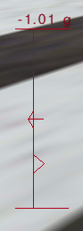
- Ensure the yoke/mouse/ailerons is centered:
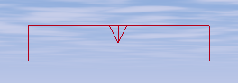
- Push the left mouse button down and keep it down, so the mouse
gets in rudder control mode. (If you don't want to use the mouse to
control the rudder, use the keypad 0
and Enter keys.) (Before you
push the left mouse button, ensure the yoke/elevator is pulled 1/2 like
asked above and the yoke/ailerons is centered.)
- Keep the Page Up key
down till the engine roars at its maximum
power.
- The airplane is now accelerating. Move the rudder/mouse to the
left and to the right to keep aligned with the runway (the left button
is pressed). You need to keep
in the middle of the runway but this does not need to be very precise.
More important is your path is parallel with the runway middle line and
stable.
- Because the yoke/elevator is pulled 1/2 in, around 40 knots the
nose will rise up. Immediately release the left mouse button, to get
back in yoke control mode. Immediately push the yoke/mouse a little
bit, to keep the engine cover
below the horizon. You just need to let the front wheel rise a little
bit above the runway. Let the rudder keep its angle (probably slightly
turned to the right; two keypad Enter
hits from the center position). From now on keep the left mouse button
released,
to stay in yoke control mode. Use the keypad 0 and Enter keys to control the rudder.
(You can also make short presses on the left mouse
button to make little rudder adjustments. I prefer using the keys.)
- The airplane soon leaves the ground. The two rear wheels no
longer
touch the runway. Push the mouse a little, to prevent the airplane from
rising in the air. Keep it flying close above the runway and aligned
with
it. (Do not try to stick really close to the ground. This would be
dangerous. Let the plane rise a little bit. Just do not favor the
rising.)
- Use the yoke/ailerons/mouse to keep the wings level with the
horizon. Use the rudder/keypad 0
and Enter to turn (needs
training). Optimal rudder position seems to be slightly right from
neutral; two keypad Enter
hits.
- Once the airspeed reaches 70 knots, pull on the yoke/mouse a
little bit. Now
the airplane firmly rises in the air. If the speed gets below 75
knots,
push the yoke to force the airplane to rise slower and gain airspeed.
If the speed rises above 75, pull the yoke to rise faster and decrease
the airspeed. There is no need to be very precise. Try to keep a stable
speed. Just avoid to go below 70 knots and above 80 knots.
- Don't keep your eyes too much on the speed indicator while you
are
rising above the runway. Rather look at the horizon and at the engine
cover. The top of the engine cover should roughly match with the
horizon
line:
- If you want to check the position of the runway but you can't see
it
because it is hidden by the engine cover, push the yoke/mouse a short
while to make the nose dive a little bit for a second. This only works
for long runways. Another trick is to look for a building, a hill or
something far in
front of the runway, on the horizon. Keep aiming at that object while
rising in the air. Keep the engine cover a little below the horizon
line, so the object you aim at stays visible.
- Once you reach 500 feet, retract the flaps ([) and push the yoke
a little. Center the rudder (slowly, one step at a time). You are now
allowed to gain speed or go on climbing (your
choice, or the control tower's). Decrease the
engine power a little so the
RPM needle gets in the green zone (Page
Down). Turn calmly
towards your intended
flight direction. Use your time to optimize the mixture. You're in
flight.
500 feet is the minimum flight altitude above open land. Above a
city the
minimum altitude is 1,000 feet. If you take off from KSFO you probably
are going to fly over a city. So go on climbing to 1,000 feet.
Don't forget to center the rudder. If the rudder is pushed to
one side, this will brake the plane. It makes the plane move
sideways through the air, with its flank aerobraking.
!
During a real take off
you
must keep in
touch with
the control tower. You also have to constantly look in all directions
to check no other airplane is coming in your direction.
An aviation classic is the ground effect.
It's the fact a wing lifts
better when close above to the ground. That too makes the wheels leave
the ground at quite a low speed, a speed at which the airplane cannot
really fly. While you are accelerating a few feet above the runway,
you are in ground effect. If you know about it, ground effect is an
advantage because it makes flying close above the ground more secure.
The airplane behaves a tiny little bit like a hovercraft. If you are
not aware of the ground effect, it can cause problems. For example it
can make you think the airplane has enough speed to rise in the
air, while it has not.
!
During a real take off, if the engine halts below 500 feet, you are not
allowed to turn and try to glide and land back on the runway. You only
have
enough height to try to turn and land back if you are above 500 feet
when the
engine halts.
! Before a real
take off you have to go through check-lists. A check lists makes you
verify, tune and tighten a list of items. It is mandatory each item in
the list be carefully verified. You have to follow a long check list
before you enter the runway and a short check list before you
accelerate to take off. This link provides check lists for the Cessna
172p and for other airplanes:
http://www.freechecklists.net
. Those check lists refer to much more levers, buttons and triggers
than talked about in this tutorial. There is nothing very complicated
in those check lists provided you learned what it is. For example one
item is you have to verify the seats backs are upright.
This is the check list I follow when I take of the virtual Cessna 172p
on FlightGear. It is very short compared to a real check list. Anyway I
know I can go into (moderate) trouble if I don't follow it. I had to
build up the discipline to follow it carefully each time:
- Check the wind direction.
- Deploy one step of flaps.
- Click the right mouse button and ensure the mouse is in yoke mode
(+).
- Put on a HUD (h, H, i,
I) or the schematic
instrument panel (P) in order
to know the controls positions.
- Pull the yoke/mouse to 1/2 the pull path.
- Check the yoke/ailerons are centered.
- Keep the left mouse button down and check the rudder is centered
or slightly to the right.
- Keep the Page Up button
down to start accelerating, till the motor RPM is maximum.
Landing
When I was a boy, I had a simple yet fairly good flight simulator on my
Sinclair ZX Spectrum
home computer. I could do everything with it, except
landing. I always crashed the plane, or reached the end of the runway
before stopping.
One day a real pilot saw me trying to land. He had never seen a flight
simulator, but he had no problem to recognize each flight instrument
and ground feature on the screen. He told me what to do. Decrease
engine power, increase engine power, push the nose down, pull the nose
up, turn a little left, turn a little right, get the flaps out... We
made a perfect landing on the second attempt.
Just like for take off, landing
is partly a procedure, partly rules you
have to stick to. You have to adapt constantly.
Same basic rules apply as for take off, yet in reverse order:
- Stay at 70 knots once below
500 feet. Descend towards the runway while
keeping at 70 knots.
- After the final rounding (see below), stay close above the runway
while decreasing speed from
the
70 knots flight speed down to the roughly 55 knots landing speed.
- Touch the runway
with the two main wheels. Keep
the front
wheel from the ground till the speed is below 40 knots.
(If you know what you are doing you are allowed to use a speed a little
below 70 knots: 65 knots.)
Following rules are essential during the
whole procedure of landing:
- Tune the speed using the
yoke/mouse/elevator: push the yoke if you are
flying
below 70 knots, pull the yoke if you are flying above 70 knots.
No
matter this makes you gain or lose altitude (except when this causes a
danger of course).
- Tune the altitude using the
engine throttle. Add power if
you are too low, retract power if you are too high.
- Once approaching the ground,
use the yoke/ailerons to keep the wings
level with the horizon. Turn using the rudder.
- Don't shut the engine down. Only shut the engine down when the
airplane is completely halted on the ground. There are two reasons for
this:
- Any moment you may need full engine power to rise back in the
air.
- Engine thrust enables you to make more precise landings. For
example if you land on a very short runway, you need that precision.
The reason why the yoke/elevator is used to tune
the speed is this method
allows for fast reactions and fine tuning. It is more important to tune
the speed closely than the altitude.
If you are both a little too high and a little
too slow, simply push the yoke a little and both problems will be
solved together. No need to use the throttle. Use your mind...
You have to get aligned with the runway. That means your flight
direction has to match the middle line of the runway (drawing (a)
below). In order to arrive at this, don't aim at the start of the
runway (b).
Rather aim at a fictitious point well ahead of the runway (c). And
begin
to turn gently towards the runway well before you reach that fictitious
point (d). Note the turns and bankings you make for these flight
corrections are often very soft. You wouldn't even notice them on the
turn coordinator. This is one example where you better rely on the
outside horizon line than on the inside flight instruments.
Try to get aligned with the runway as soon as possible. Constantly
apply the alignment procedure. The closer you come to the runway, the
better the alignment should become.
My favorite landing procedure for the Cessna 172p is roughly this one:
- Far from the runway, yet
already heading towards it,
start decreasing the
speed and let the plane descend towards 500 feet.
- Check the rudder is neutral.
Otherwise the plane will be braking and more engine power is needed.
(Type keypad keys 0 and Enter to center the rudder if
needed.) If you make corrections using the rudder, keep in mind you may
need a little more engine power.
- Once the speed is below 100
knots, deploy one flaps step (]).
- Once an altitude of 500 feet
is reached, keep that
altitude.
Once a
flight speed of 70 knots is reached, keep that speed. (If in doubt,
keep above 500 feet.) The exact altitude doesn't matter much provided
it
is stable. But stick
to 70 knots.
- Control the
altitude using the engine. Add a
little engine power if you are too low (type a few Page Up), retract
a little power
if you
are too high (type a few Page
Down).
Allow
the altitude "plenty" of time to get right. No need to get exactly 500
feet or whatever altitude you choose, but try to keep it stable. (Be
foreseeing: add a little engine power even while the altitude
decreased only very slightly. Retract power even while the desired
altitude is not yet attained...) You need an engine RPM of
roughly 1,900. That's the minimum
of the
green zone right of the tachometer. This should keep you in a stable
horizontal flight at 70 knots, provided you lowered one step of flaps.
Do not try to tune in exactly
1,900 RPM. Tune what suits to keep a stable altitude... Try to
make frequent little tunings, instead of seldom heavy tunings. Try to
foresee what is going to happen. Best is to add or retract a little
power in advance.
- Tune the trim to get the average position of the yoke/elevator
centered. This is not mandatory on the simulator, yet that way you
better mimic piloting a real airplane. On the Cessna 172p (with no
load) this means trim on neutral.
- Be firm
with the flight speed. Keep a tight and quick control on the yoke/mouse
to keep 70 knots. If the speed is lower than 70 knots, push the yoke to
gain speed (no matter you lose altitude). If you are above 70 knots,
pull the yoke to lose speed (again, no matter this makes you gain a
little altitude). Don't panic if the speed rises to 75 knots or
decreases to 65 knots. But keep in mind you can really get in trouble
if you approach a short runway at 80 knots. I manage to keep the speed
between say 68 and 72 knots.
- Fly at constant speed and
steady altitude towards
the runway. 70 and 500. Keep trying to align
with the runway. You will *never* be perfectly aligned. You have to go
on aligning till the airplane halts on the runway...
- Now you are at a low flight speed of 70 knots, no
more use the ailerons/yoke to turn. Instead use the ailerons to keep
the wings horizontal. Turn using the rudder (Keypad keys 0 and Enter). The rudder can seem an odd
device for this purpose yet you will get used to it. Move the rudder
only a few key hits to the right or to the left. Be patient. Make one
key hit at a time and allow the airplane to stabilize before you
possibly make another key hit. (When I started making landings, I found
the rudder to be hectic and I prefered to use the ailerons to turn. As
experience build up, I finally found out that turning with the rudder
allowed for more precise and comfortable adjustments.)
- The airplane may oscillate a
little. Don't bother. Just
keep in
control using the yoke.
- You're flying at constant
altitude and 70 knots speed. Once the beginning of
the runway passes under the engine
cover, it's
time to take things up seriously. This is shown in the picture below.
(Whatever altitude you are flying, once the engine cover begins to eat
the runway, you are at a correct angle towards the runway start.)
- Type ]
two times, to
deploy the full three flaps steps.
- Immediately push the yoke
forwards, to make the airplane plunge to the ground. Indeed, the full
flaps deployed make the plane brake. You plunge towards the runway to
land, of course, but also to keep the speed at 70 knots.
- Decrease the engine power. 1/4 the maximum is often fine. The
Cessna 172p needs even less. I tend to decrease the engine power
throughout the dive, to end with almost no power. The possibility to
add engine power is necessary for your safety and for the precision
of the landing, but also the possibility to decrease the engine power.
So I try to make my dives a way that I keep the engine at some decent
power level throughout the dive. If a dive obviously begins with the
need to decrease the power to minimum, there is a risk you touch the
runway far beyond its start.
- Watch the
speed
indicator like it if was your heartbeat. Control the speed using the
yoke/elevator.
- The dive makes you head
towards the runway. You will
soon
become aware that the plane is going towards a point of the runway
much further than the start of the runway. There is nothing
wrong
with that on a long runway. Yet you should train to land on short
runways. In order to correct the dive and head towards the start
edge of the runway, decrease the engine power. (On the Cessna 172p
this often leads to power to minimum, while on most other airplanes
you keep some power tuned in.) The picture below is a snapshot
from a
good dive. (Note the vertical speed indicator shows -500 feet/minute. I
never use that indicator. I solely aim at the runway edge and
its 12 white strips. Anyway, -500 feet/minute is the right descend
speed...)

- Closely keep the speed at 70
knots by pulling and pushing
the
yoke. Calmly increase and decrease the engine power in order to
head the
plane towards the starting line of the runway. Don't bother to aim
exactly
at the start of the runway. It doesn't matter if you arrive a few feet
before the runway start or much further after it. Provided
you arrive at
70 knots.
- Keep aligning with the runway, using the rudder pedals
to turn (keypad keys 0
and Enter). Keep the
wings level with the horizon using the mouse/yoke/ailerons. (Use the
ailerons
to turn only if an emergency occurs and you need to make fast and steep
turns. Then you probably need to abort the landing and get back to
altitude (see below).)
- If you suddenly realize you will arrive
really far before the
beginning of
the runway, possibly retract the flaps to one step ([). You can also let
the engine roar to maximum power for a few seconds. If you followed the
procedure you shouldn't need to do such extreme things... (At any time,
if you feel
things are going wrong, retract the flaps to one step, throttle
to full
engine power, put the trim on
neutral and gain back altitude
(keep the
speed above 70 knots). Whatever wrong happens -- you arrive aside from
the
runway, too far before the runway, at a wrong speed, a swarm of birds
is passing, whatever -- abort the landing. Get back
to altitude and
retry.)
- The "rounding" is the most
impressive part. You are like
going to
crash on the runway. Yet you will pull the yoke/mouse
before it's too late. Don't pull on
the yoke too
early. Don't pull on the yoke too firmly. Once you are really close to
the runway (for a beginner: once you are convinced it's too late and
you are going to smash into the ground), pull the yoke gently and
bring the plane in a steady flight above the runway. That's the
rounding. (During the rounding, ground effect
contributes to your security
and ease.)
- It is often best to reduce the engine power to minimum during the
rounding.
- Go on using the rudder
pedals (keypad 0
and keypad Enter)
to keep aligned with the
runway. Use the yoke/ailerons to keep the wings level with the
horizon (so both left and right wheels will touch the runway at the
same
time).
- Now you're flying close
above the runway (in ground effect). Throttle the engine
power to
minimum if it wasn't already done (this is mandatory). Deploy full
flaps if they weren't already
deployed completely (this is not mandatory on a long runway). (Don't
shut the engine down. Just throttle to minimum power. It still can
happen that you suddenly must take off again and need full power in a
few seconds.)
- Keep the plane flying close
above the runway. As the speed
decreases
from 70 knots down to 50 knots and below, keep pulling more and more on
the
yoke/mouse, steadily. Keep the plane in
the air while ensuring it stays really close to the surface of the
runway. Steadily lift the nose, while the plane slows down, up to quite
a strong angle. Make sure
the plane does not gain back
altitude (don't look at the
instruments, look at the outside). You
really have to avoid the plane rises back in the air. Indeed it would
do that at a speed below
70
knots... (You shouldn't need to pull the yoke
more than 1/2 its maximum.)
- Don't land the plane. Let it land by itself, once the speed is
too
low and the nose is high up in the air. The plane renounces to
fly, it calmly sinks in and the two rear wheels touch the runway. If
you don't hear the wheels hit the runway and the wheels
nevermore leave the runway, you probably made an optimal landing. This
also makes the
front wheel stays above the runway while the two rear wheels touch.
- Once the rear wheels roll on the runway, retract the flaps. That
way the wings will lift less and the plane will be more firmly on the
ground. (My favorite way to land the airplane is to let the flaps down
and keep pulling on the yoke while the airplane is rolling. That way I
get maximum braking. I suppose this is an example of the difference
between a simulator and reality. Using my way the airplane risks to get
back in the air any moment and it is very sensitive to blows of wind.
If I made real landings, maybe I wouldn't dare do this...)
- When the plane is rolling, an optimal position for the
yoke/elevator seems to be pulled 1/2 of the total way.
- Use the rudder pedals to keep the
plane rolling in the middle of the
runway
and straight while the speed decreases. This most often leads me to two
keypad Enter hits to the right
of the center position.
- Once rolling at a speed below 40 knots, the nose will go down
automatically. Help it by pushing
the yoke/mouse calmly, back to neutral position. The front wheel now
must touch the runway.
Beware: check the rudder position first. If it is
too much to the left or to the right, the plane will turn violently
once the front wheel touches the runway. The plane may even fall aside
and
hit the ground with a wing tip. (The rudder slightly to
the right; two keypad Enter
hits, seems an optimal position.)
- Now the front wheel is on the ground, use the mouse to control
the rudder. Keep the left mouse button down and forget the keypad keys.
Maybe just check the ailerons and elevator positions are sound before
you press the left mouse button. (Actually if everything went correctly
and there is no crosswind, you shouldn't need to steer the plane using
the rudder.)
- Once the front wheel is on
the ground, you are allowed to
use the brakes. Your choice. Keep the b
key down. Be
prepared to release it should a problem occur.
If you forgot to almost center the rudder, braking can go really bad.
Once the plane is halted or at very low
speed, you can release the b
key (if you used
it) and add a
little engine power to taxi to the parking or hangar.
To shut the engine down:
- Engine throttle to
minimum (hold Page Down
down for a
while).
- Pull the mixture lever to
halt the engine (mouse in normal pointer
mode, click on the left of the red mixture lever to pull it
out).
- Rotate the magneto switch to
OFF (a few hits on {).
To set the parking brakes in, type B.
You must be mentally prepared to abort
landing
anytime. Whatever happens: an order from the control tower, a wrong
speed or landing angle, a wrong alignment with the runway, a strong
blow of wind, birds flying over the runway... retract the flaps to one,
push the engine to maximum, center the trim and get
back to high altitude. Then either you restart the landing
procedure or you go for another airport. The pride of a pilot is to
make only safe landings.
Don't try to find "the ideal distance" to start diving to the runway.
The procedure above proposes you start diving when the white engine
cover starts eating the runway edge (provided you fly at 70 knots with
one flaps step) (the altitude doesn't matter). Best is you train
to land while starting the dive earlier and while starting to dive
later. You need to be trained to increase or decrease engine power
according to what is needed. During a real landing, depending on the
airplane's weight, the wind speed and other random things, the "ideal"
moment to dive is unpredictable. As experience builds up, you will
better feel the right moment.
If you want to make things simple for your first landing trainings,
make use of the
fact the runway at
KSFO is very long. Wait a little more before you begin the dive: let
the nose "eat up" the whole length of the leading part of the runway
(let the successive pairs of white strips on the runway disapear below
the airplane nose). Then lower the flaps
to
three steps and decrease the engine to minimum. Dive to keep the speed
around 70 knots and try to keep aligned with
the runway. You will end the dive quite far beyond the runway
start and at a high vertical speed, but who cares. Make the final
rounding. Keep aligned with the runway and
try to fly close above it. Keep
pulling more and more on the yoke/mouse, to keep the airplane flying.
Yet avoid it rising in the air. Till the wheels touch the ground. Then
just keep the airplane on the runway, using the rudder. Once
the speed is below 40 knots, push the
yoke/mouse and keep key b down
to brake.
If you are a newbie, you probably won't succeed to apply the procedure
perfectly. My advice: invent your own, more simple procedure. Then
regularly come back to the procedure listed here and read it again, to
get hints and
ideas to better your procedure. Till you get it. Also best read other
landing procedures. Send me a mail if you find interesting differences.
Analyze your own procedure. If it implies to fly at very low speed, it
is dangerous because a blow of wind from the rear will make the plane
fall. A probable problem with your procedure is the plane needs a lot
of runway length to land. If you look at the runway start you will see
there are successive groups of white stripes. I land the Cessna 172
always well before the last group of
stripes. If you are a real beginner, your procedure surely will make
the
plane tilt over or crash once in a while. The procedure listed here is
safe.
Train your procedure, again and again. The more you train it, the more
you will become able to use the one listed here. That's the way I
learned to land...
!
In a real airplane, you
must keep in touch with the
control tower constantly while landing. You will be contacted by the
control tower or you have to contact it in some key parts of the
landing. If you don't contact the control tower just after landing, an
emergency rescue team is immediately underway. If there is no good
reason you didn't contact the tower, you will really be in trouble.
Maybe you'd like to train landing without having to take off
and circuit in order to head for the runway and land. Type the command
line displayed below in a terminal window to start the simulator in
flight and heading for the runway. The airplane is placed 6
miles ahead of the runway, at an altitude of 1000
feet and a speed of about 120
knots.
fgfs --offset-distance=6
--altitude=1000 --vc=120
Possibly add --timeofday=noon
--geometry=1024x768
parameters if you need daylight and a bigger window (choose anything
you
need instead of 1024x768 (I favor 1200x900 an my screen)). FlightGear
command
line parameters are listed in http://www.flightgear.org/Docs/InstallGuide/getstartch4.html#x9-330004.4
(Note the parameters above make the airplane have some trim tuned
in. Yet you need another trim tuning during the
horizontal steady flight towards the runway. See the chapter above,
about the trim. If
in doubt, just center the trim. On the Cessna 172p, a centered trim
seems the right position.)
Once you are trained, you no longer need to do a long horizontal flight
at 500 feet and 70 knots to get to the runway. Instead you can descend
all the way from your flight altitude and at a higher speed. You should
be able to get at 500 feet and 70 knots a short while before the final
dive.
Landing at 65 knots instead of 70 knots allows to use a much shorter
runway length. Yet to benefit from this you better train landing at 65
knots. It is quite different from landing at 70 knots.
The landing speed varies according to the load of the airplane. The
more load of petrol, passengers and freight, the higher the optimal
landing speed will be.
How to fly when there is wind
Think of a hot
air balloon. Think of it as being in the middle of a
gigantic cube of
air. The cube of air may move at high speed compared to the ground,
anyway the balloon
itself is completely static in the middle of the
cube. Whatever the wind
speed, persons aboard a hot air balloon
experience not the faintest blow of wind. (To pilot a hot air balloon
you bring it at an altitude where the wind blows in a direction that
more or less suits your needs.) The same way, an aircraft flies in the
middle of a gigantic cube of air and only refers to that cube of air.
The motion of the cube of air compared to the ground doesn't bother the
aircraft.
You, the pilot, on the contrary, do bother for the speed of the
surrounding air compared to the ground. It can make you drift to the
left or to the right. It can make you arrive at your destination much
later or much sooner than planed.
When the wind blows in the same direction as you fly, the speed of the
wind adds itself to the airspeed of the plane. Hence you move faster
compared to the ground. You will arrive earlier at your destination and
have less time to enjoy the landscape. (It sometimes happens that a jet
airliner flying with a strong wind from the rear, moves faster than the
speed of sound compared to the ground. Though it doesn't brake the
sound barrier.)
When the wind blows in the opposite direction you fly (towards the nose
of the plane), the speed of the
wind subtracts itself from the airspeed of the plane. Hence you move
slower compared to the ground. You will arrive later at your
destination and have more time to enjoy the landscape. (Some slow
airplane flying against strong wind can even seem to fly backwards,
because the speed of the wind is faster than the flight airspeed of the
airplane.)
The two cases above are quite simple. More complex is when the wind
blows towards the side of the airplane. Look at the pictures below.
- On picture (a) there is no wind. The pilot wants to reach the
green hill situated to the North. He heads for the hill, towards the
North, and reaches the hill after a while. When there is no wind, you
just head towards your destination and everything's fine.
- On picture (b), the pilot keeps heading to the North. Yet there
is wind blowing from the left; from the West. The
airplane drifts to the right and misses the hill.
- On picture (c), the pilot keeps heading towards the hill. This
time he will arrive at the hill. Yet the plane flies a curved path.
This
makes the pilot loose time to get to the hill. Such a curved path is
awful when you need to make a precise navigation. (Note something: the
airplane tends to get into the wind, like a weather vane.)
- Picture (d) shows the optimal way to get to the hill. The plane
is directed to the left of the hill, slightly towards the West. That
way it compensates the wind and keeps on a straight path towards the
hill. It will need more time to reach the hill than if there was no
wind, anyway this is the best attitude. (Note something: the solution
is to let the airplane head a little bit into the wind, like a weather
vane would.)
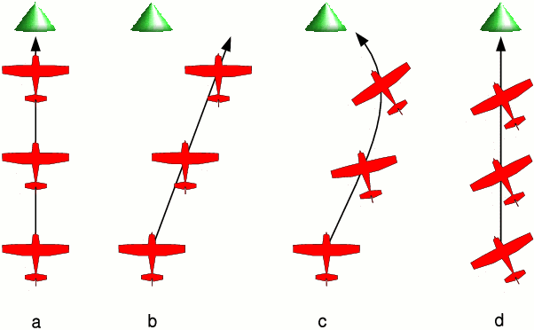
How much to the left or to the right of the object must you head? At
what angle? Serious pilots use tight geometry and trigonometry
computations to get near
exact and optimal angles. Yet I wouldn't fly a virtual Cessna 172p if I
had to
do such dry things. You need no computations at all to fly roughly
straight. The trick is you must keep your eyes on the object you fly
towards. You know you will head the plane in a direction to the left or
to the right of
the object, but you don't need to know the angle. Just keep your eyes
on the object. Get aware you are drifting leftwards or rightwards. Then
let your instinct slowly head the plane to the right or to the left to
compensate the obvious drift. When you begin
training this, you need to force your instinct a little bit and think
of what you are doing. Very soon this will become automatic, just like
when you learned to fly straight. You will no more keep the plane
headed towards the object. You will rather keep it flying towards
the object. The picture below shows a flight towards the top of the
little
mountain ahead. Wind blows from the right. I just look at he
mountain top. And I let my hands head the plane to right of the
mountain, without really thinking about it:
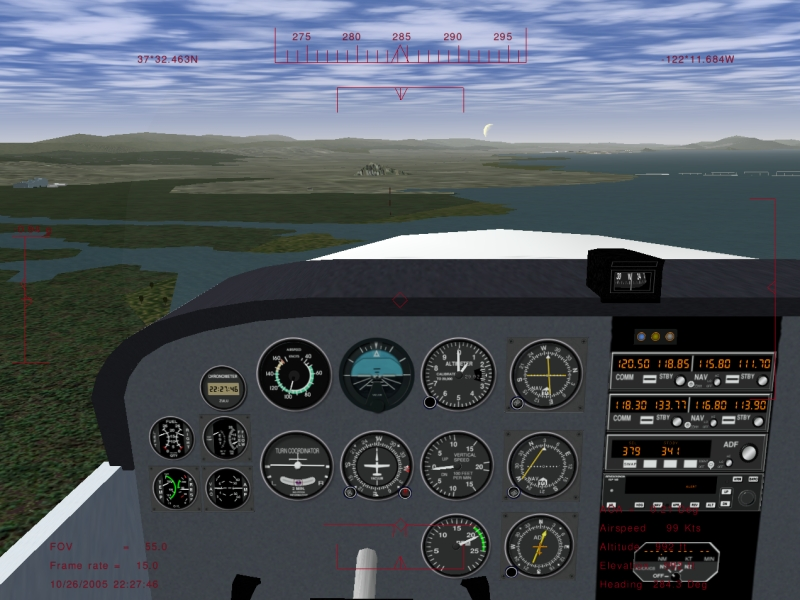
The faster the flight airspeed compared to the wind speed, the less the
wind will influence.
How to take off when there is wind
Main recommendation to take off is you must find a way to accelerate
facing the wind; with the wind blowing towards the nose of the
airplane. Before most
runways are build, statistics are made about the wind at that location.
The runway orientation is chosen so it aligns with the wind most
often. Lots of airports
have two runways at different orientations
because the wind sometimes blows in one of these directions and
sometimes in the other direction. The location of an airport is often
chosen because at that place the wind often has a stable direction and
speed.
Take off with a faint wind blowing towards the rear of the airplane,
say 1 knot, for sure
is no problem. Yet above a few knots you can get into trouble. With a
10 knot wind blowing from the rear, the front wheel will rise at the
usual 40 knots airspeed, but that makes 50 knots compared to the
runway. What matters is the speed the front wheel roll over the runway,
not the airspeed... If a problem occurs and you are still rolling at 60
knots on the runway, the consequences will be more dramatic. To end
with, you will need much more runway length and have less opportunities
to abort the landing.
The main way to know the wind direction and speed is to go to the
control tower or ask the control tower by radio. A necessary and
complementary tool are the windsocks at both
ends of the runway. They show the wind direction
and speed. The longer and the stiffer the windsock, the more wind there
is. The windsock on the picture below shows an airspeed of 5 knots:
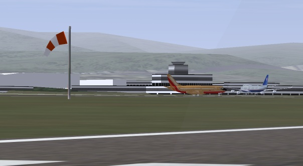
So, you have to choose a runway start that allows you to
take off with the airplane facing the wind. In real life you are not
always allowed to do this. Either there is no runway aligned with the
wind or the control tower tells you to use another runway. Then you
have to take off under crosswind; the wind blowing towards a side of
the airplane.
Basically, you can use the exact same procedure as listed above for a
take off when there is no crosswind. Yet you have to be aware of
several important facts listed below. To train this, start FlightGear
with the parameter --wind=0@10
which implies a wind of 10 knots blowing from the North (direction 0).
If you take
off from the usual San Francisco KSFO airport heading to the West, this
makes the wind blow from the right.
- You will have to push the rudder at quite a strong angle to stay
rolling aligned with the runway. Keep the rudder at that angle once the
front wheel leaves the ground and a little later once the rear wheels
leave the ground.
- Say the wind is blowing from the right. You would think you have
to push the right rudder pedal, to head the airplane a little bit into
the wind, to compensate for the leftwards push of the wind. Well you
have to do the exact opposite: push the left rudder pedal. This is
quite unnatural yet that's life. The reason of this is the rear
vertical stabilizer is pushed by the wind leftwards. The plane reacts
like a weather vane and heads in the wind. The plane as a whole turns
to
the right, with quite a strong force. You have to compensate by pushing
the rudder to turn to the left. So, you take off with the ruder pedals
pushed to the left. The picture below shows a rudder angle during a
take off with a 10 knots crosswind blowing from the right:
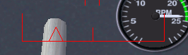
- The airplane will tend to bank leftwards. Hence you will have to
push the yoke/ailerons to the right. Actually you best place the yoke a
little to the right before the wheels start leaving the ground. (Best
is to push the yoke to the right from the start on. Indeed this is the
best way to taxi safely under a crosswind blowing from the right.) The
picture below shows an appropriate yoke/ailerons position, while
taking off with that 10 knots crosswind blowing from the right.
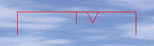
- The airplane will rise in the air much slower. The vertical speed
will be quite weak. This is because the rudder is at a a strong angle.
The airplane moves through the air with its right flanc and brakes. You
have to wait till the rudder is centered before you get the regular
vertical speed. Center the rudder very slowly, a little angle step at a
time. Meanwhile, using the yoke/ailerons, gradually head the airplane a
little bit in the wind, to keep flying aligned with the runway. Wait
till you are above a few hundreds feet before you start centering the
rudder.
Why do you keep the yoke to the right and the rudder pedals to the left
once the airplane rises in the air? This can seem odd. It's quite
logical that way the airplane will fly straight. The ailerons and the
rudder compensate each other and the airplane turns neither to the
right, neither to the left. But again, why do this, why not simply let
the yoke/ailerons and the rudder centered? The airplane will fly
straight too and be far less braked. The reason why we do this is the
ailerons keep the airplane banked to the right; towards the direction
the wind is blowing from. Hence, the huge force on the wings, that
keeps the airplane in the air, that huge force is now slightly directed
to the right. In normal circumstances this would make the airplane move
slowly sideways to the right, at 10 knots speed... Currently, it
compensates for the 10 knots wind and keeps the airplane above the
runway. So despite the wind, the airplane stays headed towards the
runway end and stays above the runway middle. Everything's fine (except
for the braking).
To me, 10 knots wind is a maximum to take off the Cessna 172p safely.
How to land when there is wind
You land the Cessna 172p under crosswind the same way you take off:
- Try to land with the wind blowing towards the airplane face. Bear
in mind the wind blows the airplane away from the runway start. So
start the dive later, when the engine cover already ate some length of
the runway.
- Under crosswind, use the exact same rudder and ailerons tuning as
for take off under the same crosswind. Train this by taking off and
landing under crosswinds. When the wheels leave the ground
and you find the appropriate yoke/ailerons angle, note down the rudder
angle and the yoke/ailerons angle. Center the rudder and ailerons
during the flight and make a circuit to land back. During the landing,
when you fly at constant 500 feet altitude and 70 knots speed, knowing
the crosswind is the same, tune in back the rudder and ailerons angle
that where optimal during take off.
Under high crosswind, hence with a strong rudder angle, the plane
brakes a lot. This implies two things:
- During the approach to the runway, at constant 500 feet altitude,
70 knots speed and 1 flaps step, you need much more engine power to
keep the altitude stable.
- Once you dive towards the runway start, keep in mind the plane is
braking. So you don't need to deploy additional flaps steps. Just
decrease the engine power.
Landing that way is quite comfortable, despite the crosswind. You just
have to be a bit more careful with the rudder once the airplane rolls
over the runway. And best keep the ailerons as if turning towards the
wind.
Note such a landing, with a steady crosswind, is unrealistic. In the
real world the wind varies quickly. You get sudden increases and gusts
of wind. The control tower just tells you by radio the maximum speed of
the
gusts. You have to adapt constantly during the landing, to
react to the turbulences and gusts.
As for the take off, 10 knots wind seems a maximum to me. (Should you
ever have
to land under heavy wind, say 25 knots or more, and there is no runway
aligned with the wind, maybe best don't land on the runway. Or don't
try to align with the runway. Align exactly with the wind and make use
of the fact you need less ground length to stop. When the plane is
going to stop keep the rudder pushed. Don't try to taxi. Simply push
the parking brakes in, push the trim and get help to latch the airplane
to the ground. In fun mode, landing the Cessna 172p under 70 knots wind
is great. You simply let it descent to the ground vertically. This is
quite unrealistic because at such a wind speed there are tremendous
turbulences close to the ground.)
The technique described here is the slip landing.
Another crosswind landing technique is the crab landing.
How to taxi when there is wind
Under 10 knots wind the Cessna 172p seems not to need particular
precautions when taxiing. Yet any sudden increase in wind speed can
tilt it and tumble it over. So best apply the recommendations whenever
there is wind.
To train taxiing on the ground when there is wind, ask for a strong
wind like 20 knots. Such a wind can tilt the plane and blow it away
tumbling any moment. One single error during taxiing and the plane is
lost.
Main rule is you must push
the yoke towards the wind. This deserves some physical
explanation:
- When the wind is blowing from 12 o'clock, this is quite logical.
The yoke is pushed (towards 12 o'clock) and the elevator makes the tail
rise a little. That's the most stable position to avoid the plane be
tilted by the wind.
- When the wind comes from 10 o'clock, pushing the yoke towards 10
o'clock makes the elevator is close to centered. The elevator almost no
more trades in. Now the most important part is played by the ailerons.
The left aileron is upward and the right aileron is downward. This
pushes the left wing down and lifts the right wing. Again, that's the
most stable position to avoid the plane be tilted by the wind.
- When the wind blows from 8 o'clock, you would think you should
invert the position of the ailerons, to keep the left wing being pushed
down. Hence you should push the yoke to 4 o'clock. Wrong! Keep pushing
the yoke to 8 o'clock. The reason is the downward position of the
aileron on the right wing makes it act like a slat. This increases the
lift on the right wing and this is all we want. Symmetrically, the
upward position of the left aileron decreases the lift of the left wing.
- When the wind comes from the rear, from 6 o'clock, the yoke is
pulled (towards 6 o'clock). The upward position of the elevator tends
to make the tail be pushed down. Once again this is the best. Strong
wind can push the tail against the ground. This is impressive but the
tail is conceived to withstand this.
Accept the plane nose can be tilted and the tail pushed against the
ground. Keep cool. This can be impressive yet there is nothing
dangerous with it. Go on using the brakes, rudder and engine to move
the airplane.
If you want to move towards the wind, you will need more engine power.
When the wind blows from the rear you may need no engine power at all.
Always keep the engine power to the minimum needed.
Especially when turning, move very slowly. Make little changes at a
time. Take your time and closely survey the yoke angle. Constantly keep
it pushed towards the wind. Constantly try to reduce the engine power.
Keep in mind using the brakes too firmly may shortly tilt the plane at
an angle that allows the wind to tilt it and blow it away.
The autopilot
An autopilot is
not an "intelligent" pilot. It just takes over simple and wearing parts
of your
work as a pilot. You still are the sole real pilot aboard and have to
keep aware of everything. Be prepared to shut the autopilot down.
During take off and landing, relying on the autopilot would be
suicidal, because you have to keep an immediate control on every
function of the airplane. (Dumb autopilot systems are reported to cause
less accidents than smart ones with artificial intelligence inside.)
The autopilot is that little rack to the right of the yoke:
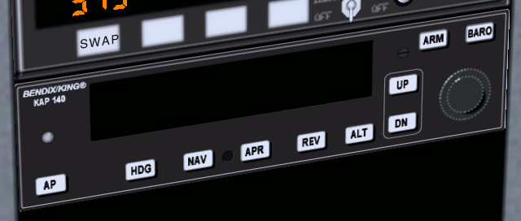
Switch it on by pressing its AP button
(standard mouse mode). The autopilot then controls the roll. It keeps
the wings level with the horizon. This is displayed in the picture
below by the "ROL"
marking. To switch the autopilot down press again on AP.
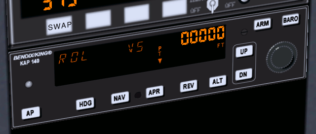
If you press the HDG button
the autopilot will try to keep the plane flying towards the direction
tuned on the directional gyro by the red marking (see the chapter about
direction). "HDG"
stands for "heading". Press again on the HDG button
to get back to roll control mode (or AP to
switch the autopilot down).
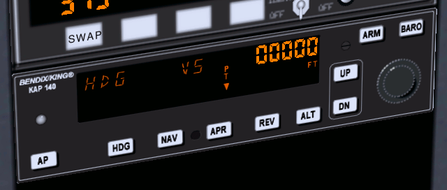
The buttons ALT,
UP and
DN are
used to tell the autopilot either to control the vertical speed (VS)
or the altitude (ALT).
From here on you maybe better study the document used by the author of
the autopilot system in
FlightGear: https://www3.bendixking.com/servlet/
com.honeywell.aes.utility.PDFDownLoadServlet?FileName=/
TechPubs/repository/006-18034-0000_2.pdf
How to land the Cherokee Warrior II
On Linux you get the
Cherokee Warrior II with the --aircraft=pa28-161
command line parameter. The Cherokee Warrior II has some
advantages upon the Cessna 172p. Thanks to its low wings it is far less
sensitive to crosswind. Fully extended flaps are more braking and
allow to land on a much shorter distance. Take off is the same as for
the Cessna 172p.
You have to get
used to some minor differences of the Cherokee Warrior II for the
landing:
- During the steady horizontal flight before landing, the trim must
be pulled a little below neutral in order to get the yoke oscillating
around neutral.
- The optimal tachometer RPM during landing is at a lower RPM than
the tachometer green zone. Roughly, keep the needle vertical.
- Only put one more flaps step (which makes two flaps steps
deployed) when the dive towards the runway begins. Don't decrease the
engine throttle too much.
- If you keep it to two flaps deployed during landing, the hover
above the runway
and the final roll will be similar to the Cessna 172p. Yet if you
put the third flaps step in (after the final
rounding), the plane will brake firmly. It will very quickly touch the
runway then come to a near halt. Be prepared to lower the front wheel
very soon. (It is possible to use the third flaps step during the dive
towards the runway, instead of tuning the engine power down.
Oscillating between two steps and three steps allows to aim the runway
start. Yet keep two flaps steps and tune the engine seems
easier.
An interesting stunt is to fly stable till nearly above the runway
start, then tune the engine to minimum and deploy three flaps steps.
The
plane almost falls to the runway. It's impressive but it works.)
Some links:
How to take off and land the Piper J3 Cub
Use the --aircraft=j3cub
parameter to get the Piper J3 Cub on Linux.
The Piper J3 Cub
is a very different airplane from the Cessna 172p and
the Cherokee Warrior II. The Cessna 172p and the Cherokee Warrior II
are front wheel airplanes.
While the Piper J3 Cub is a tail wheel airplane. Take off and landing
with tail wheel airplanes is more difficult. You
have to tightly use the rudder pedals when rolling over the runway. The
yoke often needs to be pulled backwards to the maximum. I'll discuss
this more thoroughly once I get more experience and knowledge about
tail wheel airplanes. The Piper J3 Cub should be a good introduction
and it is quite easy to take off and land provided you follow an
appropriate procedure. Stall speed seems to be a little below 40 mph
(the
airspeed indicator is in mph) (about 27 knots according to the HUD). I
guess an appropriate speed to rise in the air is a little above 50 mph.
My take off procedure for the Piper Cub is to
fully pull the yoke backwards then throttle the engine to maximum. Once
the
front wheels clearly rises from the ground, gently push the yoke back
to
neutral,
towards a
normal flight close above the runway. Let the plane accelerate to 50
mph. Then pull the yoke to keep a little more than 50 mph while rising
in the air.
The landing procedure... well in fact there are two
different landing procedures:
- The first one involves the fact the Piper J3 Cub is a very
lightweight airplane. While still high in the air, throttle the engine
down to minimum and slowly pull the yoke completely in while the speed
decreases. This slows the
plane down to stall speed (a little less than 40 mph
airspeed). It makes a steep descent to the runway. Keep the yoke
pulled in completely. The wings seemingly act as a parachute. The plane
hits the
ground and bounces on its
legendary gummy landing gear. It rolls at very low speed. While still
pulling the yoke in to maximum, push in the wheel brakes (key b).
- Second procedure lets you land the plane like a "normal"
airplane. Yet with no flaps available, at quite a lower speed and with
some big differences on the yoke:
- Fly at say 500 feet constant altitude and "exactly" 52 mph
speed towards the runway (and
align with it). Let the engine cover eat up the runway start. The
engine
cover will hide the runway completely. To
see where the runway is, push the yoke/mouse very shortly then
stabilize again in normal flight.
- Once the runway start matches with the set of instruments (if
you
could see through the instrument panel), reduce the throttle to a near
minimum and begin the dive towards the runway start. Keep 52 mph using
the yoke. Add some throttle if you are going to miss the runway edge.
(Keep in mind just a little wind is enough to change things a lot for
the Piper J3 Cub).
- Make the rounding and pull the throttle to minimum. Do not pull
steadily on the yoke. Instead let the wheels roll on the runway
immediately.
- Once the wheels roll on the runway, push firmly on the yoke, to
its maximum. This rises the tail in the air. You would think the
propeller will
hit the runway or the airplane will tilt over and be damaged. But
everything's fine. The wings are at a strong negative angle and this
brakes the plane. (Don't push the yoke this way on other airplanes,
even if their shape seems close to that of the Piper J3 Cub. Most of
them will tumble forwards.)
- The yoke being pushed in to its maximum, push the left mouse
button and keep it pushed to go in rudder control mode. Keep the plane
more or less centered on the runway. This is quite uneasy. One tip is
to
stop aiming the rudder to say the left already when the plane just
starts to turn to the left.
- Once the speed is really low (and the rudder control
stabilized),
you will see the tail begins to sink to the ground. Release the left
mouse
button to go back to yoke control. Pull the yoke
backwards completely, to the other extreme. The tail now touches the
ground and the
nose is high up. Now you can use the wheel brakes (b). (If you use the brakes
too early, the plane nose will hit the ground.)
The take off procedure mentioned above is symmetrical to the first
landing procedure. There exists a second take off procedure,
symmetrical to the second landing procedure. Yet I don't succeed it
properly so I won't write about it.
How to take off and land a jet
Take off on a jet is easy but you must have fast reflexes. My favorite
jet on FlightGear is the A-4 Skyhawk. You get it with
the --aircraft=a4-uiuc
parameter on Linux, provided it is installed.
This is the "calm" procedure to take off:
- Ask for a red and full HUD by typing h two times. The engine throttle
indicator is the leftmost on the HUD.
- The airspeed indicator is the one labeled "KIAS" on the upper
left side of the instrument panel. You can also use the airspeed
indicator on the HUD, of course.
- Tune in 1/2 engine power.
- Keep the yoke pulled in 1/2 of its total way (picture below: the
red arrow on the right side of the vertical line in the middle of the
picture).
- It is not mandatory to use the rudder to keep on the runway. The
airplane will take off before it drifts off the runway. (For sure it is
better and more "secure" to keep in the middle of the runway. But using
the rudder can make things hectic for a beginner.)
- Once above about 160 knots, the plane rises its nose in the air.
Immediately push the yoke back to neutral or almost and stabilize at
200 knots airspeed (which makes a fair climb angle) (I've no idea
whether 200 knots is the right climb speed for a real A-4. What's more
I
suppose one should rather use the AOA (see below).).
- Retract the landing gear using key g.
- Either maintain 1/2 engine power and a speed of 200 knots to get
above the clouds, or reduce the engine power to less than 1/4 and fly
normally. (Off course you can "fly normally" with full engine power.
Great fun.)
The "nervous" take off procedure is the same but you push in full
engine power. The
plane takes off quickly and you need to settle a very steep climb angle
to keep 200 knots. Best retract the landing gear immediately.
You don't land a jet the same way you land a little propeller airplane.
My way to land the A-4, inspired by
some texts I found on the Web, is this:
- Really far from the runway, keep below 2,000 feet and get the
speed
below 200 knots. Then lower the landing gear (key G) and I deploy full flaps
(all three steps, by hitting ]
three times).
- Keep a steady altitude of about 1,000 feet and a speed of
"exactly"
150 knots. Use the mouse/yoke/elevator to tune the altitude and the
engine throttle to tune the speed. (The opposite from the Cessna.)
- Try to align with the runway.
- When do you know the dive towards the runway must begin? For this
you
need
the HUD; the full default HUD with lots of features. Look at the
picture below. When you see
the "distance" between the
red "0" lines and the runway start is 25% the distance between the red
"0"
lines
and the red "-10" dotted line, it is time to dive, aiming at the runway
start. (In the picture below, that "distance" is 64%, far too much to
start a landing.)
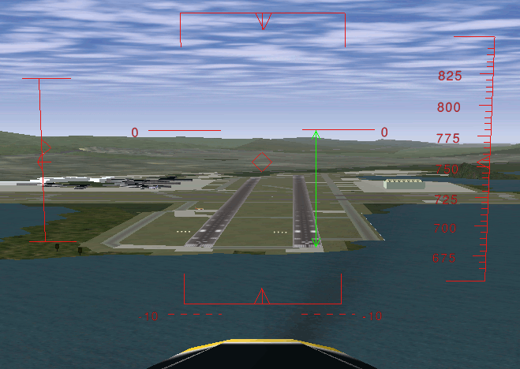
Let's explain this. The two horizontal
lines labeled "0" show the horizon line. Rather they show where the
horizon would be if the Earth was flat. When your eyes aim at those "0"
lines, you are looking horizontally. Look at the dotted
red lines labeled "-10". A feature on the ground situated there is
situated
10° below the ideal horizon. In other words: when you look to objects
"hidden"
by the lines labeled "0", you have to lower your eyes of 10° to look at
objects "hidden" by the dotted lines labeled "-10". This implies, and
it is very important, that a person in a rowboat, "hidden" by the
dotted lines labeled "-10", has to rise his eyes up 10° to look at your
plane. He sees you 10° above the horizon. In the picture above, the
start of the runway is situated at 64% of the way towards the red "-10"
dotted lines. That means you have to lower your eyes of 6.4° to look at
the runway start. This also means that if you start now to descent
towards
the runway start, the descent path will be of 6.4° (too steep). So,
the HUD allows to measure precisely the angle of the descent path. On a
jet plane you need an
angle of 2.5° (up to 3°), that is 25% of -10° (up to 30%).
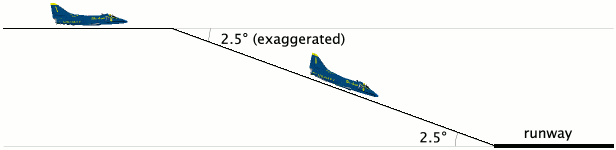
- Once descending towards the runway start, aim at it using
the yoke/mouse. And keep 150 knots speed using the engine throttle
lever.
- Keep measuring the angle between the ideal horizon and the runway
start. It must keep 2.5° (that is 25% of 10°):
- If the angle increases above 2.5°, you are above the desired
path and you must loose altitude faster. Both decrease the engine power
and dive the nose a little.
- If the angle decreases below 2.5°, you are under the desired
path. I wouldn't say you should gain altitude, rather you should loose
altitude less fast. Both add a little engine power and rise the nose a
little.
- Once very close to the runway start, do no rounding. Don't pull
steadily on the yoke like
you would for the Cessna 172p. Simply let the plane touch the
ground immediately, at high speed. Let it smash on the runway, so to
say. All three wheels almost
together. Just throttle the engine down to minimum. (If you try to
pull steadily on the yoke and hover over the
runway while the plane nose rises steadily, on a F-16 you would scrape
the plane
rear and probably destroy it.)
- Keep the key b down to
brake and use the rudder to stay aligned with the runway. Make only
very little tunings with the rudder, otherwise the plane will tumble on
one of its sides.
The HUD in a real jet contains a
symbol to show towards what the airplane is moving. It is shown in
the picture below. When you are flying at constant altitude, that
symbol is on the ideal horizon line. Once you dive towards the runway
start,
you simply have to place that symbol on the runway start. This is quite
an easy and precise way to aim at the runway start. (The
diamond in the center of the FlightGear HUD sometimes can help but it
does not have the same purpose. It shows towards what the airplane nose
is pointing. For example is you descent towards the ground at low
speed, the symbol would be somewhere on the ground while the FlightGear
diamond will be up in the sky.) (By the way, the HUD on the virtual
B-52 on FlightGear has that symbol. It is great to use while landing.)
Also, a real HUD
shows a dotted line at -2.5° to help
find the correct descend path. Simply keep that dotted line too on the
runway start.
In a real jet you don't look at the
airspeed indicator to land. Rather you look at a tool on the HUD or at
the set
of three lamps shown below. When the upper
v is
on, this means the
speed is too slow. When the lower
^ is on, the speed is too
fast. The
center
o
means the speed is OK. This indicator exists in FlightGear. On
FlightGear version 0.9.8 it seems to have wrong speeds tuned in so I
didn't use it. On FlightGear version 0.9.9 it seems OK. This
indicator does not rely on the speed itself. Rather it relies on the
AOA. That is the
Angle Of Attack, the angle at
which
the wings are pitched up against the relative airstream. There is a
close link between the AOA and the
speed. I suppose the advantage of the AOA indicator is that the optimal
AOA
does not depend on the plane load. While the speed does. By tuning the
correct AOA, always the same for every landing, you get the optimal
speed whatever the plane load. (The A-4
on FlightGear has also an AOA indicator but I don't
understand its output.)
The Cessna 172 and the A-4 Skyhawk are two extremes. Most other
airplanes are in-between these two extremes. If you trained them both
(and one or two tail wheel airplanes), you should be able to find out
how to take off and land most other airplanes.
160 knots seems an appropriate landing speed for the F-16 Falcon. Also
you
need to throttle down the engine to minimum just before the plane
should
touch the runway. Otherwise it will hover over the runway. Don't bother
for the flaps. It seems they are deployed automatically with the
landing gear. (Read the chapter about the stall).
140 up to 150 knots and all 8 flaps steps deployed seem
appropriate to land
the
virtual Boeing 737. But don't trust me especially on that one. I just
made a few experiments and didn't search for serious data. The landing
speed varies a lot depending on the plane load, I suppose 140 knots is
for a plane with no load. The Boeing 737
seems to like a gentle rounding before the wheels touch the runway.
Start the rounding early.
In the take off procedure for the Cessna 172 and the A-4 Skyhawk I
recommend you pull the yoke/mouse/elevator to
1/2 the total way, from the start on. This seems to be a bad practice
on the Pilatus PC-7. Keep the elevator
neutral. Let the plane accelerate and wait till the speed gets over 100
knots. Then pull calmly on the yoke.
During landing, deploy full flaps once you start plunging to the runway
but don't decrease the engine throttle. Decrease it only when the
hovering above the runway starts. 100 knots seems a good landing speed.
For the Cessna 310 too you better leave the elevator neutral during the
acceleration on the runway. The plane will raise its nose by its own
provided you deployed one flaps step.
(If you keep the yoke pulled from the start on, the nose will rise
sooner and you will get yawful
yaw problems.)
(Some virtual airplanes, like some big airliners or fast aircraft, need
faster physical
computations. Then add
the --model-hz=480
parameter to the command line. If the plane is difficult to control
during landings, try this.)
The angle at which you land a Cessna 172p is far steeper than the
narrow 2.5° for a jet. Nevertheless you are allowed to land the Cessna
at a narrow angle too. (Provided the terrain around the runway allows
for this, of course.) If you have passengers who
have ears problems with the variation of air pressure...
How to take off and land the P-51D Mustang?
Should you ever get a chance to pilot a P-51 Mustang,
just say no. It
is quite dangerous to take off and land. That's the kind of airplane
you fly only when your country is in danger. You need a lot of
training. Yet once in the air the P-51
Mustang seems no more dangerous to its pilot than other common
military airplanes. It is quite easy to pilot.
At low and medium altitude the P-51 wasn't better than the Spitfire and
the Messerschmitts. The big difference was at high altitude. The P-51
kept efficient and maneuverable while enemy fighters were just
capable to hang in the air. This was an advantage at medium altitude
too because the P-51 was able to plunge towards enemy airplanes from
high altitude. Another key difference was the P-51 is very streamlined.
Hence it was capable to fly much further than the Spitfire. These two
differences let the P-51 Mustang fulfill its purpose: escort
Allied
bombers all the way to their targets in Germany. This allowed the
bombings to be much more efficient and contributed to the defeat of the
Nazis.
To get the The P-51D Mustang in Linux use the --aircraft=p51d
command line parameter.
To take off the P-51D Mustang in FlightGear, deploy one flaps step,
pull and keep the yoke completely backwards, push the engine throttle
to maximum
and keep the left mouse button pressed to control the rudder and keep
on the runway. Once you reach exactly 100 mph, suddenly push the rudder
1/3 of its total way to the right. Immediately release the left mouse
button and push the yoke to rise the tail (don't push it too much, as
the sooner the wheels leave the ground the better). From now on, keep
the left mouse button released. Only make very short adjustments to
the rudder. Let the plane rise from the runway and get to altitude at a
speed of say 150 mph. Don't forget to retract the landing gear and the
flaps.
Don't make too steep turns. You would loose control on the plane and
crash.
To land, deploy full flaps and lower the landing gear from the start
on. 130 mph speed seems fine, up to 140 mph. Make an approach from
1,000 feet altitude and a dive at a low angle, like for a jet. Once
over
the runway, shut the engine down completely ({). Don't hover over the runway. Get
the wheels rolling soon (like for a jet). Hold the left mouse button
down to steer the plane using the rudder. Once the tail sinks in,
briskly pull the yoke (left mouse button shortly released) to force the
tail on the runway. Go on steering the plane using the rudder. Now the
tail is firmly on the ground, use the brakes if you want.
What then?
Once you master the content of this tutorial, you can claim to have a
basic understanding of what piloting is about. You still
lack key
knowledge and training, like these:
- How to follow real check lists.
- How to make emergency landing on very short fields, possibly with
no engine power.
- How to navigate
according to
the rules, charts, laws, radio
beacons and crosswinds.
- How to place the loads in an airplane to get a correct center of
gravity.
- How to deal with several fuel reservoirs and their valves, pumps
and backup pumps. If two reservoirs are
located on the wings ends and you let one of them empty while the other
keeps full, you will get severe problems.
- How to deal with the failure of
every possible part of the
plane.
This last part is very important. It is supported in FlightGear but I
didn't experiment with it yet. You can also decide to no more use a
given control or glue a
sticker on your screen to hide away an instrument. Note a really bad
instrument failure means the instrument still
seems to operate correctly. Yet it doesn't, and what it does or
displays endangers you.
FlightGear contains bugs. Consider those problems as a training for
real aircrafts.
Problems on real aircrafts are not the same. But there are problems.
When FlightGear suddenly puts you in a critical situation due to a bug,
consider this as a training. Try to solve the situation fast and
efficiently while keeping calm. It's not a bug, it's a feature!
There are some strong differences between a flight
simulator
with minimalistic control hardware and a real airplane. The fact the
mouse exerts no counterforce, the
fact you don't feel the vibrations and forces inside the airplane... On
one hand, some aspects of flying are made easier on the simulator.
On the other hand, a real airplane constantly gives all sorts of
valuable feedback you don't get with a simulator. One thing is common
to
the simulator and the real airplane: while landing you'd wish you had
four arms and two more brains.
You probably will learn to deal with a retractable landing gear
system and with variable pitch propellers.
Go to the FlightGear documentation page for more tutorials and
reference pages: http://www.flightgear.org/docs.html
This site is great to learn navigation: http://www.navfltsm.addr.com
I wish to thank:
- Benno
Schulenberg who corrected lots of mistakes in my English in this
tutorial.
- Albert Frank who gave me key data on piloting and corrected
technical errors.
- Vassilii
Khachaturov who learned me new things about FlightGear.
- Roy Vegard Ovesen for pointing me to the official Autopilot
Pilots Guide.
- Dene Maxwell for his solution for problems under Windows Me.
- Mark Akermann and Paul Surgeon for their
remarks.
- The FlightGear mailing list users for
their
hearty
welcome.
- 4p8 webmaster my
friend Frédéric Cloth
for the web space used by this tutorial.
Eric
Brasseur
-
September 30 2005 till December 14 2005
[
Homepage |

]